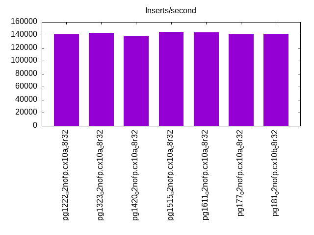
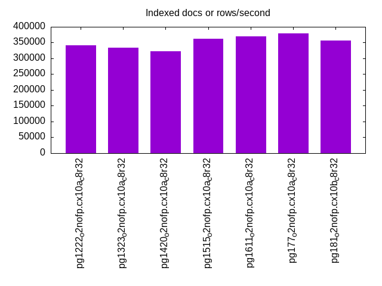
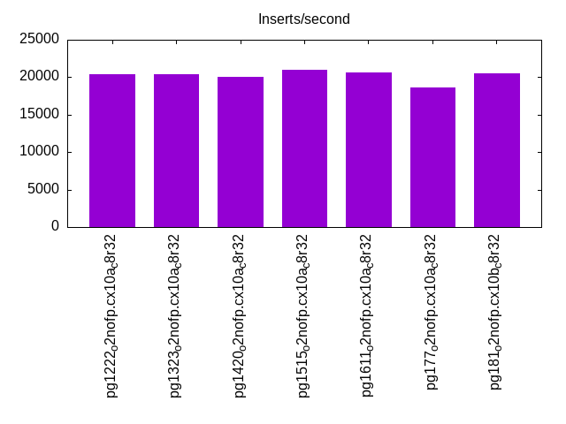
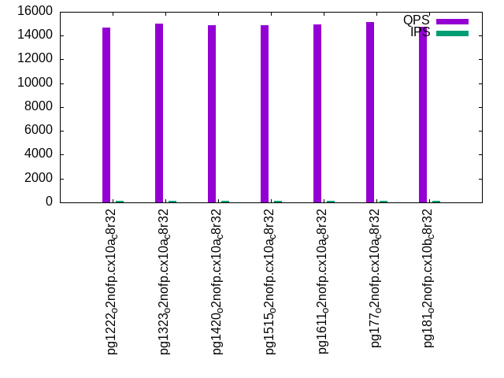
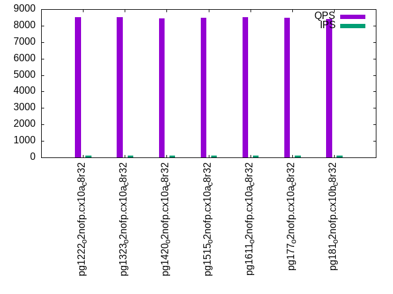
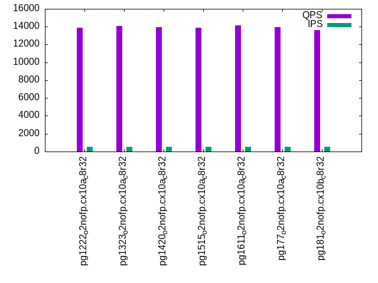
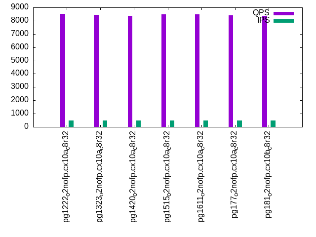
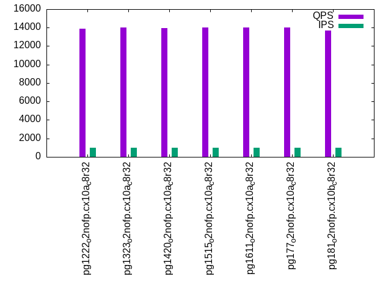
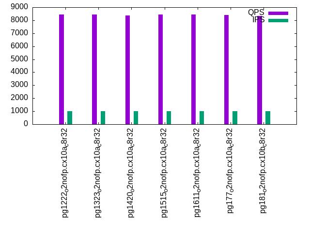

Introduction
This is a report for the insert benchmark with 30M docs and 1 client(s). It is generated by scripts (bash, awk, sed) and Tufte might not be impressed. An overview of the insert benchmark is here and a short update is here. Below, by DBMS, I mean DBMS+version.config. An example is my8020.c10b40 where my means MySQL, 8020 is version 8.0.20 and c10b40 is the name for the configuration file.
The test server has 8 AMD cores, 32G RAM and an NVMe device for the database. The benchmark was run with 1 client and there were 1 or 3 connections per client (1 for queries or inserts without rate limits, 1+1 for rate limited inserts+deletes). It uses 1 table with a table per client. It loads 30M rows per table without secondary indexes, creates 3 secondary indexes per table, then inserts 40m+10m rows per table with a delete per insert to avoid growing the table. It then does 6 read+write tests for 3600s each that do queries as fast as possible with 100,100,500,500,1000,1000 inserts/s and the same for deletes/s per client concurrent with the queries. The database is cached by Postgres. Clients and the DBMS share one server.
The tested DBMS are:
- pg1222_o2nofp.cx10a_c8r32 - Postgres 12.22 with the x10a_c8r32 config
- pg1323_o2nofp.cx10a_c8r32 - Postgres 13.23 with the x10a_c8r32 config
- pg1420_o2nofp.cx10a_c8r32 - Postgres 14.20 with the x10a_c8r32 config
- pg1515_o2nofp.cx10a_c8r32 - Postgres 15.15 with the x10a_c8r32 config
- pg1611_o2nofp.cx10a_c8r32 - Postgres 16.11 with the x10a_c8r32 config
- pg177_o2nofp.cx10a_c8r32 - Postgres 17.7 with the x10b_c8r32 config
- pg181_o2nofp.cx10b_c8r32 - Postgres 18.1 with the x10b_c8r32 config
Contents
- Summary
- l.i0: load without secondary indexes
- l.x: create secondary indexes
- l.i1: continue load after secondary indexes created with 50 inserts per transaction
- l.i2: continue load after secondary indexes created with 5 inserts per transaction
- qr100.L1: range queries with 100 insert/s per client
- qp100.L2: point queries with 100 insert/s per client
- qr500.L3: range queries with 500 insert/s per client
- qp500.L4: point queries with 500 insert/s per client
- qr1000.L5: range queries with 1000 insert/s per client
- qp1000.L6: point queries with 1000 insert/s per client
Summary
The numbers are inserts/s for l.i0, l.i1 and l.i2, indexed docs (or rows) /s for l.x and queries/s for qr100, qp100 thru qr1000, qp1000" The values are the average rate over the entire test for inserts (IPS) and queries (QPS). The range of values for IPS and QPS is split into 3 parts: bottom 25%, middle 50%, top 25%. Values in the bottom 25% have a red background, values in the top 25% have a green background and values in the middle have no color. A gray background is used for values that can be ignored because the DBMS did not sustain the target insert rate. Red backgrounds are not used when the minimum value is within 80% of the max value.
| dbms | l.i0 | l.x | l.i1 | l.i2 | qr100 | qp100 | qr500 | qp500 | qr1000 | qp1000 |
|---|---|---|---|---|---|---|---|---|---|---|
| pg1222_o2nofp.cx10a_c8r32 | 141509 | 340910 | 20418 | 2572 | 14702 | 8524 | 13901 | 8516 | 13893 | 8450 |
| pg1323_o2nofp.cx10a_c8r32 | 143541 | 333334 | 20439 | 2634 | 14977 | 8504 | 14082 | 8453 | 14007 | 8429 |
| pg1420_o2nofp.cx10a_c8r32 | 138889 | 322582 | 20070 | 2372 | 14884 | 8429 | 13950 | 8382 | 13942 | 8379 |
| pg1515_o2nofp.cx10a_c8r32 | 144928 | 361447 | 20964 | 2525 | 14897 | 8467 | 13905 | 8483 | 14006 | 8424 |
| pg1611_o2nofp.cx10a_c8r32 | 144231 | 370372 | 20682 | 2627 | 14912 | 8521 | 14133 | 8482 | 13998 | 8430 |
| pg177_o2nofp.cx10a_c8r32 | 141509 | 379748 | 18683 | 2172 | 15118 | 8465 | 13946 | 8413 | 13996 | 8393 |
| pg181_o2nofp.cx10b_c8r32 | 142180 | 357144 | 20471 | 2432 | 14736 | 8391 | 13609 | 8369 | 13673 | 8340 |
This table has relative throughput, throughput for the DBMS relative to the DBMS in the first line, using the absolute throughput from the previous table. Values less than 0.95 have a yellow background. Values greater than 1.05 have a blue background.
| dbms | l.i0 | l.x | l.i1 | l.i2 | qr100 | qp100 | qr500 | qp500 | qr1000 | qp1000 |
|---|---|---|---|---|---|---|---|---|---|---|
| pg1222_o2nofp.cx10a_c8r32 | 1.00 | 1.00 | 1.00 | 1.00 | 1.00 | 1.00 | 1.00 | 1.00 | 1.00 | 1.00 |
| pg1323_o2nofp.cx10a_c8r32 | 1.01 | 0.98 | 1.00 | 1.02 | 1.02 | 1.00 | 1.01 | 0.99 | 1.01 | 1.00 |
| pg1420_o2nofp.cx10a_c8r32 | 0.98 | 0.95 | 0.98 | 0.92 | 1.01 | 0.99 | 1.00 | 0.98 | 1.00 | 0.99 |
| pg1515_o2nofp.cx10a_c8r32 | 1.02 | 1.06 | 1.03 | 0.98 | 1.01 | 0.99 | 1.00 | 1.00 | 1.01 | 1.00 |
| pg1611_o2nofp.cx10a_c8r32 | 1.02 | 1.09 | 1.01 | 1.02 | 1.01 | 1.00 | 1.02 | 1.00 | 1.01 | 1.00 |
| pg177_o2nofp.cx10a_c8r32 | 1.00 | 1.11 | 0.92 | 0.84 | 1.03 | 0.99 | 1.00 | 0.99 | 1.01 | 0.99 |
| pg181_o2nofp.cx10b_c8r32 | 1.00 | 1.05 | 1.00 | 0.95 | 1.00 | 0.98 | 0.98 | 0.98 | 0.98 | 0.99 |
This lists the average rate of inserts/s for the tests that do inserts concurrent with queries. For such tests the query rate is listed in the table above. The read+write tests are setup so that the insert rate should match the target rate every second. Cells that are not at least 95% of the target have a red background to indicate a failure to satisfy the target.
| dbms | qr100.L1 | qp100.L2 | qr500.L3 | qp500.L4 | qr1000.L5 | qp1000.L6 |
|---|---|---|---|---|---|---|
| pg1222_o2nofp.cx10a_c8r32 | 100 | 100 | 500 | 500 | 1000 | 1000 |
| pg1323_o2nofp.cx10a_c8r32 | 100 | 100 | 500 | 500 | 999 | 999 |
| pg1420_o2nofp.cx10a_c8r32 | 100 | 100 | 500 | 500 | 1000 | 1000 |
| pg1515_o2nofp.cx10a_c8r32 | 100 | 100 | 500 | 500 | 999 | 999 |
| pg1611_o2nofp.cx10a_c8r32 | 100 | 100 | 500 | 500 | 1000 | 1000 |
| pg177_o2nofp.cx10a_c8r32 | 100 | 100 | 500 | 500 | 999 | 999 |
| pg181_o2nofp.cx10b_c8r32 | 100 | 100 | 500 | 500 | 1000 | 1000 |
| target | 100 | 100 | 500 | 500 | 1000 | 1000 |
l.i0
l.i0: load without secondary indexes. Graphs for performance per 1-second interval are here.
Average throughput:
Insert response time histogram: each cell has the percentage of responses that take <= the time in the header and max is the max response time in seconds. For the max column values in the top 25% of the range have a red background and in the bottom 25% of the range have a green background. The red background is not used when the min value is within 80% of the max value.
| dbms | 256us | 1ms | 4ms | 16ms | 64ms | 256ms | 1s | 4s | 16s | gt | max |
|---|---|---|---|---|---|---|---|---|---|---|---|
| pg1222_o2nofp.cx10a_c8r32 | 99.979 | 0.021 | nonzero | 0.004 | |||||||
| pg1323_o2nofp.cx10a_c8r32 | 99.983 | 0.017 | 0.003 | ||||||||
| pg1420_o2nofp.cx10a_c8r32 | 99.989 | 0.011 | 0.003 | ||||||||
| pg1515_o2nofp.cx10a_c8r32 | 99.985 | 0.014 | nonzero | 0.005 | |||||||
| pg1611_o2nofp.cx10a_c8r32 | 99.984 | 0.016 | nonzero | 0.008 | |||||||
| pg177_o2nofp.cx10a_c8r32 | 99.981 | 0.019 | 0.003 | ||||||||
| pg181_o2nofp.cx10b_c8r32 | 99.989 | 0.011 | 0.002 |
Performance metrics for the DBMS listed above. Some are normalized by throughput, others are not. Legend for results is here.
ips qps rps rmbps wps wmbps rpq rkbpq wpi wkbpi csps cpups cspq cpupq dbgb1 dbgb2 rss maxop p50 p99 tag 141509 0 0 0.0 528.4 59.7 0.000 0.000 0.004 0.432 17571 19.8 0.124 11 2.9 7.8 2.9 0.004 142082 140981 pg1222_o2nofp.cx10a_c8r32 143541 0 0 0.0 538.8 60.9 0.000 0.000 0.004 0.435 18282 20.7 0.127 12 2.9 7.8 2.9 0.003 144082 143180 pg1323_o2nofp.cx10a_c8r32 138889 0 0 0.0 516.6 58.4 0.000 0.000 0.004 0.431 16838 19.5 0.121 11 2.9 7.8 2.8 0.003 138883 138082 pg1420_o2nofp.cx10a_c8r32 144928 0 0 0.0 540.0 61.4 0.000 0.000 0.004 0.433 17854 20.6 0.123 11 2.9 7.8 3.0 0.005 145384 144482 pg1515_o2nofp.cx10a_c8r32 144231 0 0 0.0 537.5 61.0 0.000 0.000 0.004 0.433 17739 20.3 0.123 11 2.9 7.8 2.9 0.008 144580 143081 pg1611_o2nofp.cx10a_c8r32 141509 0 0 0.0 528.8 60.0 0.000 0.000 0.004 0.434 14737 20.0 0.104 11 2.9 7.8 2.9 0.003 142482 141582 pg177_o2nofp.cx10a_c8r32 142180 0 0 0.0 528.2 59.9 0.000 0.000 0.004 0.432 14723 20.0 0.104 11 2.9 7.8 2.9 0.002 142283 141280 pg181_o2nofp.cx10b_c8r32
Average values from iostat.
r/s rkB/s rrqm/s %rrqm r_await rareq-s w/s wkB/s wrqm/s %wrqm w_await wareq-s d/s dkB/s drqm/s %drqm d_await dareq-s f/s f_await aqu-sz %util 0.302 1.210 0.000 0.000 0.148 3.610 531.2 61548.9 29.37 5.786 0.587 114.7 2.244 11.00 0.000 0.000 0.502 4.796 29.47 1.841 0.379 9.305 pg1222_o2nofp.cx10a_c8r32 0.300 1.200 0.000 0.000 0.092 3.600 541.8 62777.6 28.37 5.511 0.388 114.5 2.355 16.12 0.000 0.000 0.522 6.069 29.99 1.444 0.260 7.969 pg1323_o2nofp.cx10a_c8r32 0.238 0.952 0.000 0.000 0.080 3.333 519.2 60168.0 27.52 5.587 0.384 114.6 2.338 27.52 0.000 0.000 0.507 9.689 28.93 1.280 0.240 7.191 pg1420_o2nofp.cx10a_c8r32 0.305 1.220 0.000 0.000 0.160 4.000 543.8 63306.9 28.78 5.390 0.375 115.3 0.070 1.420 0.000 0.000 0.086 2.186 30.29 1.100 0.243 6.806 pg1515_o2nofp.cx10a_c8r32 0.310 1.240 0.000 0.000 0.160 3.800 541.3 62926.0 28.45 5.369 0.360 115.2 0.080 57.42 0.000 0.000 0.035 53.44 30.11 1.093 0.225 6.773 pg1611_o2nofp.cx10a_c8r32 0.307 1.229 0.000 0.000 0.117 3.610 532.4 61891.2 25.97 5.043 0.330 115.0 0.034 0.411 0.000 0.000 0.128 0.976 29.67 1.073 0.201 6.552 pg177_o2nofp.cx10a_c8r32 0.302 1.210 0.000 0.000 0.096 3.610 531.7 61830.7 25.99 5.052 0.342 115.1 0.029 0.390 0.000 0.000 0.061 0.976 29.62 1.076 0.214 6.570 pg181_o2nofp.cx10b_c8r32
l.x
l.x: create secondary indexes.
Average throughput:
Performance metrics for the DBMS listed above. Some are normalized by throughput, others are not. Legend for results is here.
ips qps rps rmbps wps wmbps rpq rkbpq wpi wkbpi csps cpups cspq cpupq dbgb1 dbgb2 rss maxop p50 p99 tag 340910 0 0 0.0 640.4 78.4 0.000 0.000 0.002 0.235 1894 12.1 0.006 3 5.8 13.3 3.0 0.002 NA NA pg1222_o2nofp.cx10a_c8r32 333334 0 0 0.0 622.5 76.2 0.000 0.000 0.002 0.234 1775 12.2 0.005 3 5.8 13.3 3.0 0.002 NA NA pg1323_o2nofp.cx10a_c8r32 322582 0 0 0.0 651.4 79.6 0.000 0.000 0.002 0.253 1921 12.2 0.006 3 5.8 13.3 3.0 0.002 NA NA pg1420_o2nofp.cx10a_c8r32 361447 0 0 0.0 696.3 85.5 0.000 0.000 0.002 0.242 1989 12.1 0.006 3 5.8 13.3 3.0 0.002 NA NA pg1515_o2nofp.cx10a_c8r32 370372 0 0 0.0 747.1 91.6 0.000 0.000 0.002 0.253 2238 12.1 0.006 3 5.8 13.3 3.1 0.002 NA NA pg1611_o2nofp.cx10a_c8r32 379748 0 0 0.0 645.5 79.1 0.000 0.000 0.002 0.213 1947 12.3 0.005 3 5.8 13.3 3.0 0.002 NA NA pg177_o2nofp.cx10a_c8r32 357144 0 0 0.0 676.4 83.0 0.000 0.000 0.002 0.238 1840 12.5 0.005 3 5.8 13.3 3.0 0.002 NA NA pg181_o2nofp.cx10b_c8r32
Average values from iostat.
r/s rkB/s rrqm/s %rrqm r_await rareq-s w/s wkB/s wrqm/s %wrqm w_await wareq-s d/s dkB/s drqm/s %drqm d_await dareq-s f/s f_await aqu-sz %util 0.425 1.700 0.000 0.000 0.115 1.500 680.2 85283.3 24.46 24.65 2.474 58.40 2.263 23.60 0.000 0.000 1.824 7.879 7.513 2.009 1.251 5.612 pg1222_o2nofp.cx10a_c8r32 0.425 1.700 0.000 0.000 1.209 1.750 661.2 82902.9 24.04 19.85 2.280 65.96 2.175 11.05 0.000 0.000 1.766 5.017 7.250 1.709 1.316 5.353 pg1323_o2nofp.cx10a_c8r32 0.435 1.741 0.000 0.000 0.330 2.118 678.9 85015.7 25.95 21.96 1.965 76.89 2.506 78.35 0.000 0.000 1.726 23.29 8.118 1.954 0.823 5.620 pg1420_o2nofp.cx10a_c8r32 0.493 1.973 0.000 0.000 0.688 2.400 742.7 93350.1 25.45 17.84 3.351 86.40 0.227 82.08 0.000 0.000 0.151 68.53 8.427 1.226 1.427 5.240 pg1515_o2nofp.cx10a_c8r32 0.533 2.133 0.000 0.000 0.419 2.400 796.8 100076 27.67 18.50 3.525 86.84 0.133 2.027 0.000 0.000 0.067 2.533 9.493 1.595 1.427 5.891 pg1611_o2nofp.cx10a_c8r32 0.457 1.829 0.000 0.000 0.858 2.286 691.5 86763.2 25.06 24.13 3.710 75.95 0.071 0.286 0.000 0.000 0.309 0.857 8.586 0.999 1.067 4.996 pg177_o2nofp.cx10a_c8r32 0.493 1.973 0.000 0.000 0.743 1.867 721.4 90621.6 24.04 25.39 3.924 72.14 0.187 1.173 0.000 0.000 0.144 1.289 8.520 0.942 1.211 5.241 pg181_o2nofp.cx10b_c8r32
l.i1
l.i1: continue load after secondary indexes created with 50 inserts per transaction. Graphs for performance per 1-second interval are here.
Average throughput:
Insert response time histogram: each cell has the percentage of responses that take <= the time in the header and max is the max response time in seconds. For the max column values in the top 25% of the range have a red background and in the bottom 25% of the range have a green background. The red background is not used when the min value is within 80% of the max value.
| dbms | 256us | 1ms | 4ms | 16ms | 64ms | 256ms | 1s | 4s | 16s | gt | max |
|---|---|---|---|---|---|---|---|---|---|---|---|
| pg1222_o2nofp.cx10a_c8r32 | 46.971 | 53.019 | 0.005 | 0.005 | 0.029 | ||||||
| pg1323_o2nofp.cx10a_c8r32 | 33.383 | 66.608 | 0.004 | 0.005 | 0.035 | ||||||
| pg1420_o2nofp.cx10a_c8r32 | 41.446 | 58.553 | 0.001 | 0.013 | |||||||
| pg1515_o2nofp.cx10a_c8r32 | 32.089 | 67.897 | 0.005 | 0.009 | 0.040 | ||||||
| pg1611_o2nofp.cx10a_c8r32 | 31.139 | 68.849 | 0.005 | 0.007 | 0.031 | ||||||
| pg177_o2nofp.cx10a_c8r32 | 51.168 | 48.828 | 0.002 | 0.001 | 0.026 | ||||||
| pg181_o2nofp.cx10b_c8r32 | 37.144 | 62.852 | 0.004 | nonzero | 0.025 |
Delete response time histogram: each cell has the percentage of responses that take <= the time in the header and max is the max response time in seconds. For the max column values in the top 25% of the range have a red background and in the bottom 25% of the range have a green background. The red background is not used when the min value is within 80% of the max value.
| dbms | 256us | 1ms | 4ms | 16ms | 64ms | 256ms | 1s | 4s | 16s | gt | max |
|---|---|---|---|---|---|---|---|---|---|---|---|
| pg1222_o2nofp.cx10a_c8r32 | 24.762 | 56.847 | 18.386 | 0.005 | 0.028 | ||||||
| pg1323_o2nofp.cx10a_c8r32 | 21.750 | 66.503 | 11.743 | 0.004 | 0.035 | ||||||
| pg1420_o2nofp.cx10a_c8r32 | 20.972 | 65.556 | 13.471 | nonzero | 0.028 | ||||||
| pg1515_o2nofp.cx10a_c8r32 | 21.351 | 75.922 | 2.721 | 0.006 | 0.039 | ||||||
| pg1611_o2nofp.cx10a_c8r32 | 20.710 | 75.286 | 3.999 | 0.005 | 0.035 | ||||||
| pg177_o2nofp.cx10a_c8r32 | 20.745 | 63.159 | 16.095 | 0.001 | 0.025 | ||||||
| pg181_o2nofp.cx10b_c8r32 | 20.069 | 76.096 | 3.835 | 0.001 | 0.024 |
Performance metrics for the DBMS listed above. Some are normalized by throughput, others are not. Legend for results is here.
ips qps rps rmbps wps wmbps rpq rkbpq wpi wkbpi csps cpups cspq cpupq dbgb1 dbgb2 rss maxop p50 p99 tag 20418 0 0 0.0 251.9 27.2 0.000 0.000 0.012 1.363 10562 21.8 0.517 85 8.1 38.5 6.4 0.029 14498 8499 pg1222_o2nofp.cx10a_c8r32 20439 0 0 0.0 253.4 27.3 0.000 0.000 0.012 1.369 10637 22.2 0.520 87 8.1 38.6 6.4 0.035 14848 9949 pg1323_o2nofp.cx10a_c8r32 20070 0 0 0.0 247.7 26.7 0.000 0.000 0.012 1.360 9966 20.9 0.497 83 7.8 38.3 2.8 0.013 14398 9649 pg1420_o2nofp.cx10a_c8r32 20964 0 0 0.0 256.7 27.9 0.000 0.000 0.012 1.364 10860 20.8 0.518 79 7.8 38.4 7.6 0.040 17047 11848 pg1515_o2nofp.cx10a_c8r32 20682 0 0 0.0 253.2 27.5 0.000 0.000 0.012 1.362 10719 20.7 0.518 80 7.8 38.4 3.7 0.031 16847 11548 pg1611_o2nofp.cx10a_c8r32 18683 0 0 0.0 233.6 25.6 0.000 0.000 0.013 1.402 7927 19.7 0.424 84 7.8 38.3 3.6 0.026 15848 6199 pg177_o2nofp.cx10a_c8r32 20471 0 0 0.0 256.5 28.2 0.000 0.000 0.013 1.411 8670 20.8 0.424 81 7.8 38.2 4.3 0.025 16398 11698 pg181_o2nofp.cx10b_c8r32
Average values from iostat.
r/s rkB/s rrqm/s %rrqm r_await rareq-s w/s wkB/s wrqm/s %wrqm w_await wareq-s d/s dkB/s drqm/s %drqm d_await dareq-s f/s f_await aqu-sz %util 0.101 0.402 0.000 0.000 0.095 1.754 251.8 27824.2 15.20 6.094 1.865 109.5 2.078 10.24 0.000 0.000 0.739 4.927 17.89 1.709 0.302 6.684 pg1222_o2nofp.cx10a_c8r32 0.102 0.406 0.000 0.000 0.087 1.795 253.3 27963.8 15.31 6.045 1.773 110.0 2.084 11.37 0.000 0.000 0.713 5.333 18.17 1.555 0.320 6.651 pg1323_o2nofp.cx10a_c8r32 0.104 0.417 0.000 0.000 0.091 1.814 247.6 27279.1 13.94 5.795 1.795 110.2 2.082 12.08 0.000 0.000 0.749 5.537 18.16 1.451 0.317 6.534 pg1420_o2nofp.cx10a_c8r32 0.108 0.432 0.000 0.000 0.066 1.853 256.6 28583.5 12.39 4.784 1.663 112.0 0.006 0.040 0.000 0.000 0.019 0.105 18.39 1.162 0.305 5.837 pg1515_o2nofp.cx10a_c8r32 0.102 0.409 0.000 0.000 0.068 1.777 253.1 28154.7 12.24 4.779 1.735 111.9 0.006 0.023 0.000 0.000 0.011 0.062 18.27 1.133 0.311 5.962 pg1611_o2nofp.cx10a_c8r32 0.097 0.390 0.000 0.000 0.437 1.705 227.8 25453.4 10.41 4.453 2.293 112.0 0.006 0.088 0.000 0.000 0.017 0.347 15.26 1.195 0.292 5.239 pg177_o2nofp.cx10a_c8r32 0.106 0.424 0.000 0.000 0.066 1.707 256.4 28869.1 11.66 4.629 1.774 113.4 0.012 4.409 0.000 0.000 0.022 11.02 17.22 1.194 0.315 5.909 pg181_o2nofp.cx10b_c8r32
l.i2
l.i2: continue load after secondary indexes created with 5 inserts per transaction. Graphs for performance per 1-second interval are here.
Average throughput:

Insert response time histogram: each cell has the percentage of responses that take <= the time in the header and max is the max response time in seconds. For the max column values in the top 25% of the range have a red background and in the bottom 25% of the range have a green background. The red background is not used when the min value is within 80% of the max value.
| dbms | 256us | 1ms | 4ms | 16ms | 64ms | 256ms | 1s | 4s | 16s | gt | max |
|---|---|---|---|---|---|---|---|---|---|---|---|
| pg1222_o2nofp.cx10a_c8r32 | 50.816 | 49.183 | 0.001 | nonzero | nonzero | 0.036 | |||||
| pg1323_o2nofp.cx10a_c8r32 | 50.100 | 49.900 | nonzero | nonzero | 0.007 | ||||||
| pg1420_o2nofp.cx10a_c8r32 | 41.043 | 58.956 | nonzero | nonzero | 0.009 | ||||||
| pg1515_o2nofp.cx10a_c8r32 | 45.707 | 54.293 | nonzero | nonzero | 0.007 | ||||||
| pg1611_o2nofp.cx10a_c8r32 | 49.617 | 50.383 | nonzero | 0.003 | |||||||
| pg177_o2nofp.cx10a_c8r32 | 52.887 | 47.112 | nonzero | nonzero | 0.009 | ||||||
| pg181_o2nofp.cx10b_c8r32 | 43.297 | 56.702 | nonzero | nonzero | 0.009 |
Delete response time histogram: each cell has the percentage of responses that take <= the time in the header and max is the max response time in seconds. For the max column values in the top 25% of the range have a red background and in the bottom 25% of the range have a green background. The red background is not used when the min value is within 80% of the max value.
| dbms | 256us | 1ms | 4ms | 16ms | 64ms | 256ms | 1s | 4s | 16s | gt | max |
|---|---|---|---|---|---|---|---|---|---|---|---|
| pg1222_o2nofp.cx10a_c8r32 | 1.487 | 31.014 | 63.272 | 4.227 | nonzero | 0.037 | |||||
| pg1323_o2nofp.cx10a_c8r32 | 1.169 | 28.074 | 70.726 | 0.031 | 0.015 | ||||||
| pg1420_o2nofp.cx10a_c8r32 | 1.142 | 26.188 | 71.345 | 1.325 | 0.013 | ||||||
| pg1515_o2nofp.cx10a_c8r32 | 1.262 | 26.013 | 72.712 | 0.013 | 0.015 | ||||||
| pg1611_o2nofp.cx10a_c8r32 | 0.894 | 20.143 | 78.947 | 0.017 | 0.014 | ||||||
| pg177_o2nofp.cx10a_c8r32 | 1.191 | 28.452 | 52.467 | 17.890 | 0.015 | ||||||
| pg181_o2nofp.cx10b_c8r32 | 0.768 | 21.115 | 78.101 | 0.016 | 0.007 |
Performance metrics for the DBMS listed above. Some are normalized by throughput, others are not. Legend for results is here.
ips qps rps rmbps wps wmbps rpq rkbpq wpi wkbpi csps cpups cspq cpupq dbgb1 dbgb2 rss maxop p50 p99 tag 2572 0 0 0.0 61.4 5.8 0.000 0.000 0.024 2.290 12490 15.4 4.856 479 8.1 40.2 6.6 0.036 1760 1020 pg1222_o2nofp.cx10a_c8r32 2634 0 0 0.0 62.6 5.9 0.000 0.000 0.024 2.300 12828 15.5 4.870 471 8.2 40.3 4.7 0.007 1930 1310 pg1323_o2nofp.cx10a_c8r32 2372 0 0 0.0 57.0 5.3 0.000 0.000 0.024 2.288 11134 15.0 4.694 506 7.9 39.7 0.9 0.009 1755 1130 pg1420_o2nofp.cx10a_c8r32 2525 0 0 0.0 58.0 5.6 0.000 0.000 0.023 2.271 11780 15.1 4.666 478 7.9 40.2 0.3 0.007 1940 1330 pg1515_o2nofp.cx10a_c8r32 2627 0 0 0.0 58.9 5.7 0.000 0.000 0.022 2.230 12247 15.3 4.663 466 7.9 40.2 5.3 0.003 2145 1335 pg1611_o2nofp.cx10a_c8r32 2172 0 0 0.0 52.3 5.1 0.000 0.000 0.024 2.385 8565 14.7 3.943 541 7.9 39.9 0.6 0.009 1355 710 pg177_o2nofp.cx10a_c8r32 2432 0 0 0.0 55.1 5.4 0.000 0.000 0.023 2.277 9546 15.1 3.925 497 7.9 39.8 0.4 0.009 1970 1355 pg181_o2nofp.cx10b_c8r32
Average values from iostat.
r/s rkB/s rrqm/s %rrqm r_await rareq-s w/s wkB/s wrqm/s %wrqm w_await wareq-s d/s dkB/s drqm/s %drqm d_await dareq-s f/s f_await aqu-sz %util 0.003 0.013 0.000 0.000 0.003 0.062 60.97 5840.4 7.405 9.658 1.408 91.36 2.053 16.68 0.000 0.000 0.608 6.131 8.064 1.702 0.070 3.306 pg1222_o2nofp.cx10a_c8r32 0.004 0.017 0.000 0.000 0.003 0.079 62.66 6063.2 7.472 9.077 1.242 93.42 2.052 14.45 0.000 0.000 0.601 5.170 8.043 1.450 0.063 3.023 pg1323_o2nofp.cx10a_c8r32 0.003 0.013 0.000 0.000 0.001 0.057 57.04 5432.2 6.147 7.767 1.236 92.83 2.044 14.20 0.000 0.000 0.631 5.249 7.670 1.459 0.065 2.972 pg1420_o2nofp.cx10a_c8r32 0.004 0.017 0.000 0.000 0.003 0.076 58.01 5738.3 4.431 4.127 1.570 95.14 0.030 4.582 0.000 0.000 0.002 0.400 8.054 1.195 0.063 2.922 pg1515_o2nofp.cx10a_c8r32 0.004 0.015 0.000 0.000 0.014 0.074 58.41 5796.1 4.491 3.648 1.278 98.60 0.033 4.834 0.000 0.000 0.002 0.408 7.940 1.166 0.062 2.653 pg1611_o2nofp.cx10a_c8r32 0.003 0.011 0.000 0.000 0.011 0.057 52.32 5182.0 3.248 2.834 1.310 96.34 0.007 1.452 0.000 0.000 0.003 0.588 7.102 1.227 0.055 2.458 pg177_o2nofp.cx10a_c8r32 0.003 0.012 0.000 0.000 0.012 0.058 55.13 5542.1 3.431 3.024 1.298 99.07 0.008 1.590 0.000 0.000 0.003 0.511 7.274 1.199 0.060 2.434 pg181_o2nofp.cx10b_c8r32
qr100.L1
qr100.L1: range queries with 100 insert/s per client. Graphs for performance per 1-second interval are here.
Average throughput:
Query response time histogram: each cell has the percentage of responses that take <= the time in the header and max is the max response time in seconds. For max values in the top 25% of the range have a red background and in the bottom 25% of the range have a green background. The red background is not used when the min value is within 80% of the max value.
| dbms | 256us | 1ms | 4ms | 16ms | 64ms | 256ms | 1s | 4s | 16s | gt | max |
|---|---|---|---|---|---|---|---|---|---|---|---|
| pg1222_o2nofp.cx10a_c8r32 | 100.000 | nonzero | nonzero | 0.001 | |||||||
| pg1323_o2nofp.cx10a_c8r32 | 100.000 | nonzero | 0.001 | ||||||||
| pg1420_o2nofp.cx10a_c8r32 | 100.000 | nonzero | nonzero | nonzero | 0.010 | ||||||
| pg1515_o2nofp.cx10a_c8r32 | 100.000 | nonzero | 0.001 | ||||||||
| pg1611_o2nofp.cx10a_c8r32 | 100.000 | nonzero | nonzero | 0.001 | |||||||
| pg177_o2nofp.cx10a_c8r32 | 100.000 | nonzero | 0.001 | ||||||||
| pg181_o2nofp.cx10b_c8r32 | 100.000 | nonzero | nonzero | 0.001 |
Insert response time histogram: each cell has the percentage of responses that take <= the time in the header and max is the max response time in seconds. For max values in the top 25% of the range have a red background and in the bottom 25% of the range have a green background. The red background is not used when the min value is within 80% of the max value.
| dbms | 256us | 1ms | 4ms | 16ms | 64ms | 256ms | 1s | 4s | 16s | gt | max |
|---|---|---|---|---|---|---|---|---|---|---|---|
| pg1222_o2nofp.cx10a_c8r32 | 99.972 | 0.028 | 0.006 | ||||||||
| pg1323_o2nofp.cx10a_c8r32 | 99.972 | 0.028 | 0.006 | ||||||||
| pg1420_o2nofp.cx10a_c8r32 | 99.944 | 0.056 | 0.006 | ||||||||
| pg1515_o2nofp.cx10a_c8r32 | 0.028 | 99.917 | 0.056 | 0.006 | |||||||
| pg1611_o2nofp.cx10a_c8r32 | 0.083 | 99.861 | 0.056 | 0.006 | |||||||
| pg177_o2nofp.cx10a_c8r32 | 0.083 | 99.861 | 0.056 | 0.006 | |||||||
| pg181_o2nofp.cx10b_c8r32 | 0.111 | 99.833 | 0.056 | 0.006 |
Delete response time histogram: each cell has the percentage of responses that take <= the time in the header and max is the max response time in seconds. For max values in the top 25% of the range have a red background and in the bottom 25% of the range have a green background. The red background is not used when the min value is within 80% of the max value.
| dbms | 256us | 1ms | 4ms | 16ms | 64ms | 256ms | 1s | 4s | 16s | gt | max |
|---|---|---|---|---|---|---|---|---|---|---|---|
| pg1222_o2nofp.cx10a_c8r32 | 49.806 | 50.194 | 0.002 | ||||||||
| pg1323_o2nofp.cx10a_c8r32 | 55.611 | 44.389 | 0.002 | ||||||||
| pg1420_o2nofp.cx10a_c8r32 | 60.417 | 39.583 | 0.002 | ||||||||
| pg1515_o2nofp.cx10a_c8r32 | 51.694 | 48.306 | 0.002 | ||||||||
| pg1611_o2nofp.cx10a_c8r32 | 63.194 | 36.806 | 0.002 | ||||||||
| pg177_o2nofp.cx10a_c8r32 | 49.528 | 50.472 | 0.002 | ||||||||
| pg181_o2nofp.cx10b_c8r32 | 55.472 | 44.528 | 0.002 |
Performance metrics for the DBMS listed above. Some are normalized by throughput, others are not. Legend for results is here.
ips qps rps rmbps wps wmbps rpq rkbpq wpi wkbpi csps cpups cspq cpupq dbgb1 dbgb2 rss maxop p50 p99 tag 100 14702 0 0.0 14.9 0.8 0.000 0.000 0.149 7.746 56201 11.3 3.823 61 8.1 40.2 0.1 0.001 14686 14542 pg1222_o2nofp.cx10a_c8r32 100 14977 0 0.0 15.0 0.8 0.000 0.000 0.150 7.781 57258 12.5 3.823 67 8.2 40.3 0.1 0.001 14974 14782 pg1323_o2nofp.cx10a_c8r32 100 14884 0 0.0 15.4 0.8 0.000 0.000 0.154 7.928 56892 12.4 3.822 67 7.9 39.7 0.1 0.010 14894 14686 pg1420_o2nofp.cx10a_c8r32 100 14897 0 0.0 13.1 0.8 0.000 0.000 0.131 7.715 56891 12.4 3.819 67 7.9 40.1 0.1 0.001 14894 14686 pg1515_o2nofp.cx10a_c8r32 100 14912 0 0.0 13.1 0.8 0.000 0.000 0.131 7.708 56978 12.4 3.821 67 7.9 40.2 0.1 0.001 14926 14686 pg1611_o2nofp.cx10a_c8r32 100 15118 0 0.0 12.4 0.8 0.000 0.000 0.124 7.750 57721 12.4 3.818 66 7.9 39.9 0.1 0.001 15118 14894 pg177_o2nofp.cx10a_c8r32 100 14736 0 0.0 12.4 0.8 0.000 0.000 0.124 7.737 56290 12.4 3.820 67 7.9 39.8 0.1 0.001 14750 14510 pg181_o2nofp.cx10b_c8r32
Average values from iostat.
r/s rkB/s rrqm/s %rrqm r_await rareq-s w/s wkB/s wrqm/s %wrqm w_await wareq-s d/s dkB/s drqm/s %drqm d_await dareq-s f/s f_await aqu-sz %util 0.000 0.000 0.000 0.000 0.000 0.000 14.87 772.8 2.788 16.78 5.606 52.49 2.000 9.598 0.000 0.000 1.679 4.799 3.433 2.170 0.093 3.928 pg1222_o2nofp.cx10a_c8r32 0.000 0.000 0.000 0.000 0.000 0.000 15.02 776.4 2.879 17.30 5.364 52.42 2.000 9.604 0.000 0.000 1.586 4.802 3.460 1.877 0.089 3.777 pg1323_o2nofp.cx10a_c8r32 0.000 0.000 0.000 0.000 0.000 0.000 15.35 790.0 2.514 15.17 5.390 52.44 2.001 10.01 0.000 0.000 1.819 5.002 3.477 1.903 0.091 3.822 pg1420_o2nofp.cx10a_c8r32 0.000 0.000 0.000 0.000 0.000 0.000 13.09 769.7 0.261 2.085 6.241 60.58 0.001 0.002 0.000 0.000 0.003 0.011 3.446 1.548 0.085 3.570 pg1515_o2nofp.cx10a_c8r32 0.000 0.000 0.000 0.000 0.000 0.000 13.10 768.2 0.250 1.986 6.258 60.62 0.001 0.002 0.000 0.000 0.000 0.011 3.452 1.478 0.085 3.512 pg1611_o2nofp.cx10a_c8r32 0.000 0.000 0.000 0.000 0.000 0.000 12.39 773.1 0.241 2.083 6.645 65.61 0.001 0.002 0.000 0.000 0.000 0.011 2.835 1.520 0.084 2.992 pg177_o2nofp.cx10a_c8r32 0.000 0.000 0.000 0.000 0.000 0.000 12.39 770.9 0.246 2.080 6.709 65.40 0.001 0.002 0.000 0.000 0.000 0.011 2.831 1.476 0.085 2.959 pg181_o2nofp.cx10b_c8r32
qp100.L2
qp100.L2: point queries with 100 insert/s per client. Graphs for performance per 1-second interval are here.
Average throughput:
Query response time histogram: each cell has the percentage of responses that take <= the time in the header and max is the max response time in seconds. For max values in the top 25% of the range have a red background and in the bottom 25% of the range have a green background. The red background is not used when the min value is within 80% of the max value.
| dbms | 256us | 1ms | 4ms | 16ms | 64ms | 256ms | 1s | 4s | 16s | gt | max |
|---|---|---|---|---|---|---|---|---|---|---|---|
| pg1222_o2nofp.cx10a_c8r32 | 99.999 | 0.001 | nonzero | 0.002 | |||||||
| pg1323_o2nofp.cx10a_c8r32 | 99.999 | 0.001 | 0.001 | ||||||||
| pg1420_o2nofp.cx10a_c8r32 | 99.998 | 0.002 | 0.001 | ||||||||
| pg1515_o2nofp.cx10a_c8r32 | 99.999 | 0.001 | nonzero | 0.001 | |||||||
| pg1611_o2nofp.cx10a_c8r32 | 99.999 | 0.001 | 0.001 | ||||||||
| pg177_o2nofp.cx10a_c8r32 | 99.999 | 0.001 | nonzero | 0.001 | |||||||
| pg181_o2nofp.cx10b_c8r32 | 99.999 | 0.001 | nonzero | 0.001 |
Insert response time histogram: each cell has the percentage of responses that take <= the time in the header and max is the max response time in seconds. For max values in the top 25% of the range have a red background and in the bottom 25% of the range have a green background. The red background is not used when the min value is within 80% of the max value.
| dbms | 256us | 1ms | 4ms | 16ms | 64ms | 256ms | 1s | 4s | 16s | gt | max |
|---|---|---|---|---|---|---|---|---|---|---|---|
| pg1222_o2nofp.cx10a_c8r32 | 99.944 | 0.056 | 0.006 | ||||||||
| pg1323_o2nofp.cx10a_c8r32 | 99.972 | 0.028 | 0.005 | ||||||||
| pg1420_o2nofp.cx10a_c8r32 | 99.972 | 0.028 | 0.006 | ||||||||
| pg1515_o2nofp.cx10a_c8r32 | 99.944 | 0.056 | 0.006 | ||||||||
| pg1611_o2nofp.cx10a_c8r32 | 99.944 | 0.056 | 0.006 | ||||||||
| pg177_o2nofp.cx10a_c8r32 | 99.944 | 0.056 | 0.005 | ||||||||
| pg181_o2nofp.cx10b_c8r32 | 99.972 | 0.028 | 0.006 |
Delete response time histogram: each cell has the percentage of responses that take <= the time in the header and max is the max response time in seconds. For max values in the top 25% of the range have a red background and in the bottom 25% of the range have a green background. The red background is not used when the min value is within 80% of the max value.
| dbms | 256us | 1ms | 4ms | 16ms | 64ms | 256ms | 1s | 4s | 16s | gt | max |
|---|---|---|---|---|---|---|---|---|---|---|---|
| pg1222_o2nofp.cx10a_c8r32 | 1.528 | 98.444 | 0.028 | 0.005 | |||||||
| pg1323_o2nofp.cx10a_c8r32 | 0.389 | 99.583 | 0.028 | 0.005 | |||||||
| pg1420_o2nofp.cx10a_c8r32 | 4.444 | 95.528 | 0.028 | 0.005 | |||||||
| pg1515_o2nofp.cx10a_c8r32 | 1.222 | 98.750 | 0.028 | 0.004 | |||||||
| pg1611_o2nofp.cx10a_c8r32 | 3.250 | 96.722 | 0.028 | 0.005 | |||||||
| pg177_o2nofp.cx10a_c8r32 | 0.417 | 99.556 | 0.028 | 0.004 | |||||||
| pg181_o2nofp.cx10b_c8r32 | 0.556 | 99.417 | 0.028 | 0.005 |
Performance metrics for the DBMS listed above. Some are normalized by throughput, others are not. Legend for results is here.
ips qps rps rmbps wps wmbps rpq rkbpq wpi wkbpi csps cpups cspq cpupq dbgb1 dbgb2 rss maxop p50 p99 tag 100 8524 0 0.0 63.4 1.7 0.000 0.000 0.634 17.041 33064 11.1 3.879 104 8.1 40.2 0.2 0.002 8527 8463 pg1222_o2nofp.cx10a_c8r32 100 8504 0 0.0 63.2 1.7 0.000 0.000 0.633 17.068 33023 12.4 3.883 117 8.2 40.3 0.2 0.001 8511 8431 pg1323_o2nofp.cx10a_c8r32 100 8429 0 0.0 62.3 1.7 0.000 0.000 0.624 17.016 32642 12.4 3.873 118 7.9 39.7 0.1 0.001 8431 8383 pg1420_o2nofp.cx10a_c8r32 100 8467 0 0.0 60.0 1.6 0.000 0.000 0.600 16.798 32735 12.4 3.866 117 7.9 40.1 0.1 0.001 8463 8399 pg1515_o2nofp.cx10a_c8r32 100 8521 0 0.0 60.0 1.6 0.000 0.000 0.600 16.813 32961 12.4 3.868 116 7.9 40.2 0.1 0.001 8527 8447 pg1611_o2nofp.cx10a_c8r32 100 8465 0 0.0 58.7 1.6 0.000 0.000 0.587 16.771 32714 12.4 3.865 117 7.9 39.9 0.1 0.001 8479 8383 pg177_o2nofp.cx10a_c8r32 100 8391 0 0.0 58.9 1.6 0.000 0.000 0.589 16.771 32428 12.4 3.865 118 7.9 39.8 0.1 0.001 8383 8335 pg181_o2nofp.cx10b_c8r32
Average values from iostat.
r/s rkB/s rrqm/s %rrqm r_await rareq-s w/s wkB/s wrqm/s %wrqm w_await wareq-s d/s dkB/s drqm/s %drqm d_await dareq-s f/s f_await aqu-sz %util 0.000 0.000 0.000 0.000 0.000 0.000 63.31 1697.5 3.271 6.338 4.736 29.22 2.001 9.600 0.000 0.000 0.934 4.799 3.418 1.904 0.312 4.371 pg1222_o2nofp.cx10a_c8r32 0.000 0.000 0.000 0.000 0.000 0.000 63.14 1698.6 3.315 6.280 4.759 29.45 2.001 9.607 0.000 0.000 1.290 4.802 3.418 1.712 0.309 4.376 pg1323_o2nofp.cx10a_c8r32 0.000 0.000 0.000 0.000 0.000 0.000 62.28 1693.4 2.995 5.790 4.730 29.75 1.998 9.988 0.000 0.000 1.185 4.970 3.419 1.671 0.305 4.344 pg1420_o2nofp.cx10a_c8r32 0.000 0.000 0.000 0.000 0.000 0.000 59.92 1673.4 0.648 1.339 5.177 31.33 0.001 0.002 0.000 0.000 0.000 0.011 3.421 1.375 0.312 4.168 pg1515_o2nofp.cx10a_c8r32 0.000 0.000 0.000 0.000 0.000 0.000 59.89 1672.9 0.627 1.196 5.216 31.38 0.001 0.002 0.000 0.000 0.003 0.011 3.417 1.321 0.316 4.215 pg1611_o2nofp.cx10a_c8r32 0.000 0.000 0.000 0.000 0.000 0.000 58.60 1670.7 0.655 1.342 5.896 32.74 0.001 0.002 0.000 0.000 0.003 0.011 2.599 1.408 0.349 4.057 pg177_o2nofp.cx10a_c8r32 0.000 0.000 0.000 0.000 0.000 0.000 58.86 1670.8 0.641 1.299 5.924 32.29 0.001 0.002 0.000 0.000 0.000 0.011 2.598 1.361 0.352 4.017 pg181_o2nofp.cx10b_c8r32
qr500.L3
qr500.L3: range queries with 500 insert/s per client. Graphs for performance per 1-second interval are here.
Average throughput:
Query response time histogram: each cell has the percentage of responses that take <= the time in the header and max is the max response time in seconds. For max values in the top 25% of the range have a red background and in the bottom 25% of the range have a green background. The red background is not used when the min value is within 80% of the max value.
| dbms | 256us | 1ms | 4ms | 16ms | 64ms | 256ms | 1s | 4s | 16s | gt | max |
|---|---|---|---|---|---|---|---|---|---|---|---|
| pg1222_o2nofp.cx10a_c8r32 | 99.999 | 0.001 | nonzero | 0.002 | |||||||
| pg1323_o2nofp.cx10a_c8r32 | 100.000 | nonzero | nonzero | 0.002 | |||||||
| pg1420_o2nofp.cx10a_c8r32 | 99.999 | 0.001 | nonzero | 0.002 | |||||||
| pg1515_o2nofp.cx10a_c8r32 | 99.998 | 0.002 | nonzero | 0.003 | |||||||
| pg1611_o2nofp.cx10a_c8r32 | 99.999 | 0.001 | nonzero | 0.004 | |||||||
| pg177_o2nofp.cx10a_c8r32 | 100.000 | nonzero | nonzero | nonzero | 0.007 | ||||||
| pg181_o2nofp.cx10b_c8r32 | 99.999 | 0.001 | nonzero | 0.003 |
Insert response time histogram: each cell has the percentage of responses that take <= the time in the header and max is the max response time in seconds. For max values in the top 25% of the range have a red background and in the bottom 25% of the range have a green background. The red background is not used when the min value is within 80% of the max value.
| dbms | 256us | 1ms | 4ms | 16ms | 64ms | 256ms | 1s | 4s | 16s | gt | max |
|---|---|---|---|---|---|---|---|---|---|---|---|
| pg1222_o2nofp.cx10a_c8r32 | 22.633 | 77.328 | 0.039 | 0.010 | |||||||
| pg1323_o2nofp.cx10a_c8r32 | 24.278 | 75.672 | 0.050 | 0.009 | |||||||
| pg1420_o2nofp.cx10a_c8r32 | 27.833 | 72.133 | 0.033 | 0.009 | |||||||
| pg1515_o2nofp.cx10a_c8r32 | 24.922 | 74.956 | 0.122 | 0.010 | |||||||
| pg1611_o2nofp.cx10a_c8r32 | 25.756 | 74.072 | 0.172 | 0.010 | |||||||
| pg177_o2nofp.cx10a_c8r32 | 18.283 | 81.461 | 0.256 | 0.010 | |||||||
| pg181_o2nofp.cx10b_c8r32 | 23.850 | 76.117 | 0.033 | 0.009 |
Delete response time histogram: each cell has the percentage of responses that take <= the time in the header and max is the max response time in seconds. For max values in the top 25% of the range have a red background and in the bottom 25% of the range have a green background. The red background is not used when the min value is within 80% of the max value.
| dbms | 256us | 1ms | 4ms | 16ms | 64ms | 256ms | 1s | 4s | 16s | gt | max |
|---|---|---|---|---|---|---|---|---|---|---|---|
| pg1222_o2nofp.cx10a_c8r32 | 1.939 | 97.222 | 0.839 | 0.006 | |||||||
| pg1323_o2nofp.cx10a_c8r32 | 0.206 | 97.911 | 1.883 | 0.005 | |||||||
| pg1420_o2nofp.cx10a_c8r32 | 0.883 | 96.833 | 2.283 | 0.006 | |||||||
| pg1515_o2nofp.cx10a_c8r32 | 0.089 | 97.717 | 2.194 | 0.007 | |||||||
| pg1611_o2nofp.cx10a_c8r32 | 0.033 | 97.061 | 2.906 | 0.010 | |||||||
| pg177_o2nofp.cx10a_c8r32 | 93.561 | 6.439 | 0.011 | ||||||||
| pg181_o2nofp.cx10b_c8r32 | 0.206 | 96.039 | 3.756 | 0.006 |
Performance metrics for the DBMS listed above. Some are normalized by throughput, others are not. Legend for results is here.
ips qps rps rmbps wps wmbps rpq rkbpq wpi wkbpi csps cpups cspq cpupq dbgb1 dbgb2 rss maxop p50 p99 tag 500 13901 0 0.0 71.0 2.2 0.000 0.000 0.142 4.599 53379 11.1 3.840 64 8.2 39.0 0.4 0.002 13902 13342 pg1222_o2nofp.cx10a_c8r32 500 14082 0 0.0 70.5 2.2 0.000 0.000 0.141 4.606 54114 13.0 3.843 74 8.2 39.1 0.4 0.002 14078 13486 pg1323_o2nofp.cx10a_c8r32 500 13950 0 0.0 69.8 2.3 0.000 0.000 0.140 4.631 53509 13.0 3.836 75 7.9 38.5 0.3 0.002 13950 13406 pg1420_o2nofp.cx10a_c8r32 500 13905 0 0.0 67.8 2.3 0.000 0.000 0.136 4.625 53275 12.9 3.831 74 8.0 39.0 0.3 0.003 13902 13326 pg1515_o2nofp.cx10a_c8r32 500 14133 0 0.0 67.8 2.3 0.000 0.000 0.136 4.631 54175 13.0 3.833 74 8.0 39.1 4.0 0.004 14126 13566 pg1611_o2nofp.cx10a_c8r32 500 13946 0 0.0 67.4 2.3 0.000 0.000 0.135 4.642 53419 12.9 3.830 74 7.9 38.8 0.3 0.007 13950 13326 pg177_o2nofp.cx10a_c8r32 500 13609 0 0.0 67.2 2.2 0.000 0.000 0.134 4.584 52099 12.8 3.828 75 7.9 38.6 0.3 0.003 13598 12990 pg181_o2nofp.cx10b_c8r32
Average values from iostat.
r/s rkB/s rrqm/s %rrqm r_await rareq-s w/s wkB/s wrqm/s %wrqm w_await wareq-s d/s dkB/s drqm/s %drqm d_await dareq-s f/s f_await aqu-sz %util 0.000 0.000 0.000 0.000 0.000 0.000 70.86 2285.8 4.071 6.612 3.964 33.00 2.044 683.7 0.000 0.000 1.157 42.73 4.265 1.919 0.285 4.430 pg1222_o2nofp.cx10a_c8r32 0.001 0.002 0.000 0.000 0.000 0.011 70.43 2288.2 3.975 6.593 4.098 33.15 2.045 685.0 0.000 0.000 1.089 44.31 4.247 1.705 0.294 4.334 pg1323_o2nofp.cx10a_c8r32 0.001 0.002 0.000 0.000 0.000 0.011 69.69 2300.6 3.490 5.805 4.077 33.70 2.045 694.6 0.000 0.000 1.146 43.02 4.244 1.713 0.288 4.353 pg1420_o2nofp.cx10a_c8r32 0.000 0.000 0.000 0.000 0.000 0.000 67.70 2298.7 1.595 2.895 4.412 35.37 0.046 684.6 0.000 0.000 0.005 41.75 4.241 1.423 0.296 4.159 pg1515_o2nofp.cx10a_c8r32 0.000 0.000 0.000 0.000 0.000 0.000 67.70 2300.7 1.554 2.922 4.440 35.41 0.045 679.7 0.000 0.000 0.004 87.73 4.236 1.419 0.299 4.190 pg1611_o2nofp.cx10a_c8r32 0.000 0.000 0.000 0.000 0.000 0.000 67.36 2306.6 1.452 2.623 4.678 35.94 0.044 684.6 0.000 0.000 0.005 43.89 3.940 1.409 0.313 4.193 pg177_o2nofp.cx10a_c8r32 0.000 0.000 0.000 0.000 0.000 0.000 67.12 2278.7 1.201 1.948 4.728 35.33 0.043 684.6 0.000 0.000 0.002 44.46 3.918 1.399 0.314 4.138 pg181_o2nofp.cx10b_c8r32
qp500.L4
qp500.L4: point queries with 500 insert/s per client. Graphs for performance per 1-second interval are here.
Average throughput:
Query response time histogram: each cell has the percentage of responses that take <= the time in the header and max is the max response time in seconds. For max values in the top 25% of the range have a red background and in the bottom 25% of the range have a green background. The red background is not used when the min value is within 80% of the max value.
| dbms | 256us | 1ms | 4ms | 16ms | 64ms | 256ms | 1s | 4s | 16s | gt | max |
|---|---|---|---|---|---|---|---|---|---|---|---|
| pg1222_o2nofp.cx10a_c8r32 | 99.996 | 0.004 | nonzero | 0.002 | |||||||
| pg1323_o2nofp.cx10a_c8r32 | 99.996 | 0.004 | nonzero | 0.002 | |||||||
| pg1420_o2nofp.cx10a_c8r32 | 99.996 | 0.004 | nonzero | 0.002 | |||||||
| pg1515_o2nofp.cx10a_c8r32 | 99.996 | 0.003 | nonzero | 0.002 | |||||||
| pg1611_o2nofp.cx10a_c8r32 | 99.996 | 0.004 | nonzero | 0.002 | |||||||
| pg177_o2nofp.cx10a_c8r32 | 99.997 | 0.003 | nonzero | 0.002 | |||||||
| pg181_o2nofp.cx10b_c8r32 | 99.997 | 0.003 | nonzero | 0.002 |
Insert response time histogram: each cell has the percentage of responses that take <= the time in the header and max is the max response time in seconds. For max values in the top 25% of the range have a red background and in the bottom 25% of the range have a green background. The red background is not used when the min value is within 80% of the max value.
| dbms | 256us | 1ms | 4ms | 16ms | 64ms | 256ms | 1s | 4s | 16s | gt | max |
|---|---|---|---|---|---|---|---|---|---|---|---|
| pg1222_o2nofp.cx10a_c8r32 | 24.639 | 75.344 | 0.006 | 0.011 | 0.020 | ||||||
| pg1323_o2nofp.cx10a_c8r32 | 28.889 | 71.100 | 0.011 | 0.006 | |||||||
| pg1420_o2nofp.cx10a_c8r32 | 29.083 | 70.900 | 0.006 | 0.011 | 0.023 | ||||||
| pg1515_o2nofp.cx10a_c8r32 | 29.894 | 70.050 | 0.044 | 0.011 | 0.021 | ||||||
| pg1611_o2nofp.cx10a_c8r32 | 32.811 | 67.161 | 0.017 | 0.011 | 0.019 | ||||||
| pg177_o2nofp.cx10a_c8r32 | 25.083 | 74.867 | 0.044 | 0.006 | 0.025 | ||||||
| pg181_o2nofp.cx10b_c8r32 | 26.261 | 73.567 | 0.161 | 0.011 | 0.021 |
Delete response time histogram: each cell has the percentage of responses that take <= the time in the header and max is the max response time in seconds. For max values in the top 25% of the range have a red background and in the bottom 25% of the range have a green background. The red background is not used when the min value is within 80% of the max value.
| dbms | 256us | 1ms | 4ms | 16ms | 64ms | 256ms | 1s | 4s | 16s | gt | max |
|---|---|---|---|---|---|---|---|---|---|---|---|
| pg1222_o2nofp.cx10a_c8r32 | 31.983 | 63.722 | 4.289 | 0.006 | 0.018 | ||||||
| pg1323_o2nofp.cx10a_c8r32 | 25.189 | 67.367 | 7.444 | 0.013 | |||||||
| pg1420_o2nofp.cx10a_c8r32 | 26.417 | 64.244 | 9.328 | 0.011 | 0.022 | ||||||
| pg1515_o2nofp.cx10a_c8r32 | 17.950 | 71.383 | 10.656 | 0.011 | 0.020 | ||||||
| pg1611_o2nofp.cx10a_c8r32 | 20.267 | 64.661 | 15.061 | 0.011 | 0.017 | ||||||
| pg177_o2nofp.cx10a_c8r32 | 18.150 | 59.767 | 22.078 | 0.006 | 0.023 | ||||||
| pg181_o2nofp.cx10b_c8r32 | 17.322 | 77.483 | 5.189 | 0.006 | 0.019 |
Performance metrics for the DBMS listed above. Some are normalized by throughput, others are not. Legend for results is here.
ips qps rps rmbps wps wmbps rpq rkbpq wpi wkbpi csps cpups cspq cpupq dbgb1 dbgb2 rss maxop p50 p99 tag 500 8516 0 0.0 45.8 3.0 0.000 0.000 0.092 6.141 33186 11.6 3.897 109 8.2 36.9 0.3 0.002 8511 8431 pg1222_o2nofp.cx10a_c8r32 500 8453 0 0.0 45.9 3.0 0.000 0.000 0.092 6.152 32978 12.6 3.902 119 8.2 37.0 0.3 0.002 8463 8399 pg1323_o2nofp.cx10a_c8r32 500 8382 0 0.0 45.3 3.0 0.000 0.000 0.091 6.089 32590 12.6 3.888 120 7.9 36.4 0.3 0.002 8383 8319 pg1420_o2nofp.cx10a_c8r32 500 8483 0 0.0 43.2 3.0 0.000 0.000 0.087 6.087 32956 12.6 3.885 119 8.0 36.9 0.3 0.002 8495 8399 pg1515_o2nofp.cx10a_c8r32 500 8482 0 0.0 43.1 3.0 0.000 0.000 0.086 6.085 32949 12.6 3.885 119 8.0 37.0 1.7 0.002 8495 8399 pg1611_o2nofp.cx10a_c8r32 500 8413 0 0.0 41.9 3.0 0.000 0.000 0.084 6.079 32645 12.7 3.880 121 8.0 36.7 0.3 0.002 8415 8335 pg177_o2nofp.cx10a_c8r32 500 8369 0 0.0 41.8 3.0 0.000 0.000 0.084 6.062 32462 12.6 3.879 120 7.9 36.5 0.2 0.002 8367 8271 pg181_o2nofp.cx10b_c8r32
Average values from iostat.
r/s rkB/s rrqm/s %rrqm r_await rareq-s w/s wkB/s wrqm/s %wrqm w_await wareq-s d/s dkB/s drqm/s %drqm d_await dareq-s f/s f_await aqu-sz %util 0.000 0.000 0.000 0.000 0.000 0.000 45.53 3035.1 3.897 8.105 2.096 61.79 2.086 1251.1 0.000 0.000 0.839 43.45 3.992 1.824 0.091 3.241 pg1222_o2nofp.cx10a_c8r32 0.001 0.004 0.000 0.000 0.000 0.011 45.67 3038.5 4.219 8.826 2.093 61.58 2.087 1261.5 0.000 0.000 0.943 43.96 4.029 1.661 0.092 3.190 pg1323_o2nofp.cx10a_c8r32 0.003 0.011 0.000 0.000 0.000 0.011 45.05 3009.1 3.609 7.681 2.125 61.65 2.085 1251.5 0.000 0.000 1.017 43.81 4.002 1.487 0.092 3.245 pg1420_o2nofp.cx10a_c8r32 0.000 0.000 0.000 0.000 0.000 0.000 42.94 3005.8 1.532 2.592 2.422 65.19 0.084 1241.5 0.000 0.000 0.005 41.68 4.021 1.380 0.095 3.160 pg1515_o2nofp.cx10a_c8r32 0.000 0.000 0.000 0.000 0.000 0.000 42.85 3005.0 1.532 2.467 2.413 65.34 0.083 1241.5 0.000 0.000 0.008 42.25 3.986 1.372 0.093 3.147 pg1611_o2nofp.cx10a_c8r32 0.000 0.000 0.000 0.000 0.000 0.000 41.66 3002.3 1.461 2.443 2.626 67.53 0.085 1241.5 0.000 0.000 0.004 41.45 3.397 1.319 0.097 2.900 pg177_o2nofp.cx10a_c8r32 0.000 0.000 0.000 0.000 0.000 0.000 41.55 2996.1 1.614 3.445 2.688 66.65 0.085 1241.5 0.000 0.000 0.004 41.40 3.178 1.383 0.098 2.871 pg181_o2nofp.cx10b_c8r32
qr1000.L5
qr1000.L5: range queries with 1000 insert/s per client. Graphs for performance per 1-second interval are here.
Average throughput:
Query response time histogram: each cell has the percentage of responses that take <= the time in the header and max is the max response time in seconds. For max values in the top 25% of the range have a red background and in the bottom 25% of the range have a green background. The red background is not used when the min value is within 80% of the max value.
| dbms | 256us | 1ms | 4ms | 16ms | 64ms | 256ms | 1s | 4s | 16s | gt | max |
|---|---|---|---|---|---|---|---|---|---|---|---|
| pg1222_o2nofp.cx10a_c8r32 | 99.998 | 0.002 | nonzero | nonzero | 0.006 | ||||||
| pg1323_o2nofp.cx10a_c8r32 | 99.998 | 0.002 | nonzero | nonzero | 0.005 | ||||||
| pg1420_o2nofp.cx10a_c8r32 | 99.998 | 0.002 | nonzero | nonzero | 0.005 | ||||||
| pg1515_o2nofp.cx10a_c8r32 | 99.998 | 0.002 | nonzero | nonzero | 0.005 | ||||||
| pg1611_o2nofp.cx10a_c8r32 | 99.998 | 0.002 | nonzero | nonzero | 0.005 | ||||||
| pg177_o2nofp.cx10a_c8r32 | 99.998 | 0.002 | nonzero | nonzero | 0.005 | ||||||
| pg181_o2nofp.cx10b_c8r32 | 99.998 | 0.002 | nonzero | nonzero | 0.005 |
Insert response time histogram: each cell has the percentage of responses that take <= the time in the header and max is the max response time in seconds. For max values in the top 25% of the range have a red background and in the bottom 25% of the range have a green background. The red background is not used when the min value is within 80% of the max value.
| dbms | 256us | 1ms | 4ms | 16ms | 64ms | 256ms | 1s | 4s | 16s | gt | max |
|---|---|---|---|---|---|---|---|---|---|---|---|
| pg1222_o2nofp.cx10a_c8r32 | 39.497 | 60.492 | 0.011 | 0.010 | |||||||
| pg1323_o2nofp.cx10a_c8r32 | 44.081 | 55.917 | 0.003 | 0.005 | |||||||
| pg1420_o2nofp.cx10a_c8r32 | 47.342 | 52.647 | 0.011 | 0.015 | |||||||
| pg1515_o2nofp.cx10a_c8r32 | 45.494 | 54.497 | 0.008 | 0.007 | |||||||
| pg1611_o2nofp.cx10a_c8r32 | 46.425 | 53.561 | 0.014 | 0.009 | |||||||
| pg177_o2nofp.cx10a_c8r32 | 43.536 | 56.442 | 0.019 | 0.003 | 0.022 | ||||||
| pg181_o2nofp.cx10b_c8r32 | 48.981 | 50.981 | 0.039 | 0.010 |
Delete response time histogram: each cell has the percentage of responses that take <= the time in the header and max is the max response time in seconds. For max values in the top 25% of the range have a red background and in the bottom 25% of the range have a green background. The red background is not used when the min value is within 80% of the max value.
| dbms | 256us | 1ms | 4ms | 16ms | 64ms | 256ms | 1s | 4s | 16s | gt | max |
|---|---|---|---|---|---|---|---|---|---|---|---|
| pg1222_o2nofp.cx10a_c8r32 | 12.600 | 85.842 | 1.558 | 0.008 | |||||||
| pg1323_o2nofp.cx10a_c8r32 | 12.308 | 85.042 | 2.650 | 0.008 | |||||||
| pg1420_o2nofp.cx10a_c8r32 | 10.200 | 86.756 | 3.042 | 0.003 | 0.026 | ||||||
| pg1515_o2nofp.cx10a_c8r32 | 11.075 | 84.744 | 4.181 | 0.014 | |||||||
| pg1611_o2nofp.cx10a_c8r32 | 13.181 | 78.972 | 7.847 | 0.008 | |||||||
| pg177_o2nofp.cx10a_c8r32 | 9.503 | 79.394 | 11.100 | 0.003 | 0.026 | ||||||
| pg181_o2nofp.cx10b_c8r32 | 8.900 | 88.086 | 3.014 | 0.010 |
Performance metrics for the DBMS listed above. Some are normalized by throughput, others are not. Legend for results is here.
ips qps rps rmbps wps wmbps rpq rkbpq wpi wkbpi csps cpups cspq cpupq dbgb1 dbgb2 rss maxop p50 p99 tag 1000 13893 0 0.0 54.9 3.5 0.000 0.000 0.055 3.549 53604 11.8 3.858 68 8.2 34.5 0.4 0.006 13855 13038 pg1222_o2nofp.cx10a_c8r32 999 14007 0 0.0 54.7 3.5 0.000 0.000 0.055 3.551 54094 13.5 3.862 77 8.2 34.6 0.4 0.005 13966 13118 pg1323_o2nofp.cx10a_c8r32 1000 13942 0 0.0 53.7 3.4 0.000 0.000 0.054 3.497 53693 13.4 3.851 77 8.0 34.1 0.3 0.005 13918 13086 pg1420_o2nofp.cx10a_c8r32 999 14006 0 0.0 51.5 3.4 0.000 0.000 0.052 3.490 53921 13.4 3.850 77 8.0 34.6 0.4 0.005 13982 13134 pg1515_o2nofp.cx10a_c8r32 1000 13998 0 0.0 51.7 3.4 0.000 0.000 0.052 3.486 53856 13.5 3.847 77 8.0 34.6 3.2 0.005 13966 13118 pg1611_o2nofp.cx10a_c8r32 999 13996 0 0.0 51.1 3.4 0.000 0.000 0.051 3.501 53797 13.5 3.844 77 8.0 34.4 0.4 0.005 13950 13006 pg177_o2nofp.cx10a_c8r32 1000 13673 0 0.0 52.2 3.4 0.000 0.000 0.052 3.523 52540 13.4 3.843 78 8.0 34.2 0.3 0.005 13534 12862 pg181_o2nofp.cx10b_c8r32
Average values from iostat.
r/s rkB/s rrqm/s %rrqm r_await rareq-s w/s wkB/s wrqm/s %wrqm w_await wareq-s d/s dkB/s drqm/s %drqm d_await dareq-s f/s f_await aqu-sz %util 0.000 0.000 0.000 0.000 0.000 0.000 54.69 3520.3 3.684 6.544 1.897 65.89 2.094 1387.9 0.000 0.000 0.808 43.51 4.771 1.821 0.097 3.340 pg1222_o2nofp.cx10a_c8r32 0.000 0.000 0.000 0.000 0.000 0.000 54.49 3519.9 4.057 7.572 1.904 66.42 2.098 1387.9 0.000 0.000 0.944 76.79 4.739 1.625 0.096 3.239 pg1323_o2nofp.cx10a_c8r32 0.001 0.004 0.000 0.000 0.000 0.011 53.46 3467.9 3.737 6.845 2.054 66.06 2.088 1388.3 0.000 0.000 0.902 60.73 4.749 1.476 0.102 3.315 pg1420_o2nofp.cx10a_c8r32 0.000 0.000 0.000 0.000 0.000 0.000 51.26 3458.4 1.652 2.553 2.232 69.55 0.092 1378.3 0.000 0.000 0.001 41.78 4.733 1.284 0.100 3.188 pg1515_o2nofp.cx10a_c8r32 0.000 0.000 0.000 0.000 0.000 0.000 51.53 3456.7 1.650 2.473 2.235 69.31 0.090 1378.3 0.000 0.000 0.005 42.82 4.742 1.346 0.101 3.209 pg1611_o2nofp.cx10a_c8r32 0.001 0.004 0.000 0.000 0.001 0.011 50.90 3470.0 1.618 2.661 2.404 70.24 0.094 1378.3 0.000 0.000 0.005 82.57 4.410 1.352 0.107 3.148 pg177_o2nofp.cx10a_c8r32 0.000 0.000 0.000 0.000 0.000 0.000 52.01 3491.6 1.850 3.070 2.414 67.98 0.090 1369.2 0.000 0.000 0.003 85.31 4.422 1.361 0.110 3.160 pg181_o2nofp.cx10b_c8r32
qp1000.L6
qp1000.L6: point queries with 1000 insert/s per client. Graphs for performance per 1-second interval are here.
Average throughput:
Query response time histogram: each cell has the percentage of responses that take <= the time in the header and max is the max response time in seconds. For max values in the top 25% of the range have a red background and in the bottom 25% of the range have a green background. The red background is not used when the min value is within 80% of the max value.
| dbms | 256us | 1ms | 4ms | 16ms | 64ms | 256ms | 1s | 4s | 16s | gt | max |
|---|---|---|---|---|---|---|---|---|---|---|---|
| pg1222_o2nofp.cx10a_c8r32 | 99.995 | 0.005 | nonzero | 0.002 | |||||||
| pg1323_o2nofp.cx10a_c8r32 | 99.995 | 0.005 | nonzero | 0.001 | |||||||
| pg1420_o2nofp.cx10a_c8r32 | 99.995 | 0.005 | nonzero | 0.001 | |||||||
| pg1515_o2nofp.cx10a_c8r32 | 99.995 | 0.005 | nonzero | 0.002 | |||||||
| pg1611_o2nofp.cx10a_c8r32 | 99.995 | 0.005 | 0.001 | ||||||||
| pg177_o2nofp.cx10a_c8r32 | 99.995 | 0.005 | nonzero | 0.002 | |||||||
| pg181_o2nofp.cx10b_c8r32 | 99.995 | 0.005 | nonzero | 0.002 |
Insert response time histogram: each cell has the percentage of responses that take <= the time in the header and max is the max response time in seconds. For max values in the top 25% of the range have a red background and in the bottom 25% of the range have a green background. The red background is not used when the min value is within 80% of the max value.
| dbms | 256us | 1ms | 4ms | 16ms | 64ms | 256ms | 1s | 4s | 16s | gt | max |
|---|---|---|---|---|---|---|---|---|---|---|---|
| pg1222_o2nofp.cx10a_c8r32 | 33.814 | 66.178 | 0.008 | 0.006 | |||||||
| pg1323_o2nofp.cx10a_c8r32 | 37.381 | 62.611 | 0.008 | 0.006 | |||||||
| pg1420_o2nofp.cx10a_c8r32 | 36.958 | 63.022 | 0.019 | 0.009 | |||||||
| pg1515_o2nofp.cx10a_c8r32 | 37.619 | 62.369 | 0.011 | 0.007 | |||||||
| pg1611_o2nofp.cx10a_c8r32 | 36.086 | 63.903 | 0.008 | 0.003 | 0.029 | ||||||
| pg177_o2nofp.cx10a_c8r32 | 32.992 | 66.989 | 0.019 | 0.009 | |||||||
| pg181_o2nofp.cx10b_c8r32 | 43.967 | 56.017 | 0.011 | 0.006 | 0.028 |
Delete response time histogram: each cell has the percentage of responses that take <= the time in the header and max is the max response time in seconds. For max values in the top 25% of the range have a red background and in the bottom 25% of the range have a green background. The red background is not used when the min value is within 80% of the max value.
| dbms | 256us | 1ms | 4ms | 16ms | 64ms | 256ms | 1s | 4s | 16s | gt | max |
|---|---|---|---|---|---|---|---|---|---|---|---|
| pg1222_o2nofp.cx10a_c8r32 | 15.597 | 82.672 | 1.731 | 0.011 | |||||||
| pg1323_o2nofp.cx10a_c8r32 | 10.047 | 85.889 | 4.064 | 0.010 | |||||||
| pg1420_o2nofp.cx10a_c8r32 | 10.192 | 85.639 | 4.169 | 0.011 | |||||||
| pg1515_o2nofp.cx10a_c8r32 | 10.000 | 84.331 | 5.669 | 0.011 | |||||||
| pg1611_o2nofp.cx10a_c8r32 | 10.519 | 80.181 | 9.297 | 0.003 | 0.027 | ||||||
| pg177_o2nofp.cx10a_c8r32 | 8.997 | 79.653 | 11.350 | 0.012 | |||||||
| pg181_o2nofp.cx10b_c8r32 | 23.042 | 73.225 | 3.728 | 0.006 | 0.026 |
Performance metrics for the DBMS listed above. Some are normalized by throughput, others are not. Legend for results is here.
ips qps rps rmbps wps wmbps rpq rkbpq wpi wkbpi csps cpups cspq cpupq dbgb1 dbgb2 rss maxop p50 p99 tag 1000 8450 0 0.0 44.8 3.6 0.000 0.000 0.045 3.643 33167 12.0 3.925 114 8.2 31.7 0.3 0.002 8447 8367 pg1222_o2nofp.cx10a_c8r32 999 8429 0 0.0 44.9 3.6 0.000 0.000 0.045 3.647 33123 13.3 3.930 126 8.2 31.9 6.5 0.001 8431 8367 pg1323_o2nofp.cx10a_c8r32 1000 8379 0 0.0 44.6 3.5 0.000 0.000 0.045 3.613 32812 13.2 3.916 126 8.0 31.4 0.3 0.001 8383 8303 pg1420_o2nofp.cx10a_c8r32 999 8424 0 0.0 42.5 3.5 0.000 0.000 0.042 3.589 32951 13.2 3.912 125 8.0 31.8 0.3 0.002 8431 8319 pg1515_o2nofp.cx10a_c8r32 1000 8430 0 0.0 42.8 3.5 0.000 0.000 0.043 3.617 32957 13.2 3.910 125 8.1 31.9 3.2 0.001 8431 8351 pg1611_o2nofp.cx10a_c8r32 999 8393 0 0.0 40.8 3.5 0.000 0.000 0.041 3.582 32757 13.3 3.903 127 8.0 31.7 0.3 0.002 8399 8319 pg177_o2nofp.cx10a_c8r32 1000 8340 0 0.0 41.4 3.5 0.000 0.000 0.041 3.629 32538 13.2 3.901 127 8.0 31.5 0.2 0.002 8335 8255 pg181_o2nofp.cx10b_c8r32
Average values from iostat.
r/s rkB/s rrqm/s %rrqm r_await rareq-s w/s wkB/s wrqm/s %wrqm w_await wareq-s d/s dkB/s drqm/s %drqm d_await dareq-s f/s f_await aqu-sz %util 0.000 0.000 0.000 0.000 0.000 0.000 44.51 3608.0 3.589 7.217 1.638 79.15 2.110 1652.7 0.000 0.000 0.812 45.46 4.089 1.821 0.066 2.732 pg1222_o2nofp.cx10a_c8r32 0.000 0.000 0.000 0.000 0.000 0.000 44.55 3607.2 3.975 8.183 1.499 78.82 2.111 1643.5 0.000 0.000 0.833 80.62 4.098 1.632 0.062 2.609 pg1323_o2nofp.cx10a_c8r32 0.000 0.000 0.000 0.000 0.000 0.000 44.28 3574.7 3.548 7.227 1.690 78.92 2.106 1634.8 0.000 0.000 0.868 84.24 4.087 1.518 0.068 2.718 pg1420_o2nofp.cx10a_c8r32 0.000 0.000 0.000 0.000 0.000 0.000 42.15 3549.8 1.882 3.039 1.847 83.13 0.111 1624.8 0.000 0.000 0.002 40.83 4.096 1.344 0.065 2.577 pg1515_o2nofp.cx10a_c8r32 0.000 0.000 0.000 0.000 0.000 0.000 42.53 3578.9 1.944 3.183 1.803 82.84 0.106 1633.9 0.000 0.000 0.001 43.24 4.111 1.339 0.064 2.532 pg1611_o2nofp.cx10a_c8r32 0.000 0.000 0.000 0.000 0.000 0.000 40.47 3542.4 1.758 2.836 2.011 86.88 0.109 1624.8 0.000 0.000 0.004 41.89 3.398 1.312 0.068 2.372 pg177_o2nofp.cx10a_c8r32 0.000 0.000 0.000 0.000 0.000 0.000 41.03 3584.8 1.742 2.849 1.941 85.94 0.108 1643.0 0.000 0.000 0.005 79.06 3.240 1.324 0.068 2.276 pg181_o2nofp.cx10b_c8r32
l.i0
l.i0: load without secondary indexes
Performance metrics for all DBMS, not just the ones listed above. Some are normalized by throughput, others are not. Legend for results is here.
ips qps rps rmbps wps wmbps rpq rkbpq wpi wkbpi csps cpups cspq cpupq dbgb1 dbgb2 rss maxop p50 p99 tag 141509 0 0 0.0 528.4 59.7 0.000 0.000 0.004 0.432 17571 19.8 0.124 11 2.9 7.8 2.9 0.004 142082 140981 pg1222_o2nofp.cx10a_c8r32 143541 0 0 0.0 538.8 60.9 0.000 0.000 0.004 0.435 18282 20.7 0.127 12 2.9 7.8 2.9 0.003 144082 143180 pg1323_o2nofp.cx10a_c8r32 138889 0 0 0.0 516.6 58.4 0.000 0.000 0.004 0.431 16838 19.5 0.121 11 2.9 7.8 2.8 0.003 138883 138082 pg1420_o2nofp.cx10a_c8r32 144928 0 0 0.0 540.0 61.4 0.000 0.000 0.004 0.433 17854 20.6 0.123 11 2.9 7.8 3.0 0.005 145384 144482 pg1515_o2nofp.cx10a_c8r32 144231 0 0 0.0 537.5 61.0 0.000 0.000 0.004 0.433 17739 20.3 0.123 11 2.9 7.8 2.9 0.008 144580 143081 pg1611_o2nofp.cx10a_c8r32 141509 0 0 0.0 528.8 60.0 0.000 0.000 0.004 0.434 14737 20.0 0.104 11 2.9 7.8 2.9 0.003 142482 141582 pg177_o2nofp.cx10a_c8r32 142180 0 0 0.0 528.2 59.9 0.000 0.000 0.004 0.432 14723 20.0 0.104 11 2.9 7.8 2.9 0.002 142283 141280 pg181_o2nofp.cx10b_c8r32
l.x
l.x: create secondary indexes
Performance metrics for all DBMS, not just the ones listed above. Some are normalized by throughput, others are not. Legend for results is here.
ips qps rps rmbps wps wmbps rpq rkbpq wpi wkbpi csps cpups cspq cpupq dbgb1 dbgb2 rss maxop p50 p99 tag 340910 0 0 0.0 640.4 78.4 0.000 0.000 0.002 0.235 1894 12.1 0.006 3 5.8 13.3 3.0 0.002 NA NA pg1222_o2nofp.cx10a_c8r32 333334 0 0 0.0 622.5 76.2 0.000 0.000 0.002 0.234 1775 12.2 0.005 3 5.8 13.3 3.0 0.002 NA NA pg1323_o2nofp.cx10a_c8r32 322582 0 0 0.0 651.4 79.6 0.000 0.000 0.002 0.253 1921 12.2 0.006 3 5.8 13.3 3.0 0.002 NA NA pg1420_o2nofp.cx10a_c8r32 361447 0 0 0.0 696.3 85.5 0.000 0.000 0.002 0.242 1989 12.1 0.006 3 5.8 13.3 3.0 0.002 NA NA pg1515_o2nofp.cx10a_c8r32 370372 0 0 0.0 747.1 91.6 0.000 0.000 0.002 0.253 2238 12.1 0.006 3 5.8 13.3 3.1 0.002 NA NA pg1611_o2nofp.cx10a_c8r32 379748 0 0 0.0 645.5 79.1 0.000 0.000 0.002 0.213 1947 12.3 0.005 3 5.8 13.3 3.0 0.002 NA NA pg177_o2nofp.cx10a_c8r32 357144 0 0 0.0 676.4 83.0 0.000 0.000 0.002 0.238 1840 12.5 0.005 3 5.8 13.3 3.0 0.002 NA NA pg181_o2nofp.cx10b_c8r32
l.i1
l.i1: continue load after secondary indexes created with 50 inserts per transaction
Performance metrics for all DBMS, not just the ones listed above. Some are normalized by throughput, others are not. Legend for results is here.
ips qps rps rmbps wps wmbps rpq rkbpq wpi wkbpi csps cpups cspq cpupq dbgb1 dbgb2 rss maxop p50 p99 tag 20418 0 0 0.0 251.9 27.2 0.000 0.000 0.012 1.363 10562 21.8 0.517 85 8.1 38.5 6.4 0.029 14498 8499 pg1222_o2nofp.cx10a_c8r32 20439 0 0 0.0 253.4 27.3 0.000 0.000 0.012 1.369 10637 22.2 0.520 87 8.1 38.6 6.4 0.035 14848 9949 pg1323_o2nofp.cx10a_c8r32 20070 0 0 0.0 247.7 26.7 0.000 0.000 0.012 1.360 9966 20.9 0.497 83 7.8 38.3 2.8 0.013 14398 9649 pg1420_o2nofp.cx10a_c8r32 20964 0 0 0.0 256.7 27.9 0.000 0.000 0.012 1.364 10860 20.8 0.518 79 7.8 38.4 7.6 0.040 17047 11848 pg1515_o2nofp.cx10a_c8r32 20682 0 0 0.0 253.2 27.5 0.000 0.000 0.012 1.362 10719 20.7 0.518 80 7.8 38.4 3.7 0.031 16847 11548 pg1611_o2nofp.cx10a_c8r32 18683 0 0 0.0 233.6 25.6 0.000 0.000 0.013 1.402 7927 19.7 0.424 84 7.8 38.3 3.6 0.026 15848 6199 pg177_o2nofp.cx10a_c8r32 20471 0 0 0.0 256.5 28.2 0.000 0.000 0.013 1.411 8670 20.8 0.424 81 7.8 38.2 4.3 0.025 16398 11698 pg181_o2nofp.cx10b_c8r32
l.i2
l.i2: continue load after secondary indexes created with 5 inserts per transaction
Performance metrics for all DBMS, not just the ones listed above. Some are normalized by throughput, others are not. Legend for results is here.
ips qps rps rmbps wps wmbps rpq rkbpq wpi wkbpi csps cpups cspq cpupq dbgb1 dbgb2 rss maxop p50 p99 tag 2572 0 0 0.0 61.4 5.8 0.000 0.000 0.024 2.290 12490 15.4 4.856 479 8.1 40.2 6.6 0.036 1760 1020 pg1222_o2nofp.cx10a_c8r32 2634 0 0 0.0 62.6 5.9 0.000 0.000 0.024 2.300 12828 15.5 4.870 471 8.2 40.3 4.7 0.007 1930 1310 pg1323_o2nofp.cx10a_c8r32 2372 0 0 0.0 57.0 5.3 0.000 0.000 0.024 2.288 11134 15.0 4.694 506 7.9 39.7 0.9 0.009 1755 1130 pg1420_o2nofp.cx10a_c8r32 2525 0 0 0.0 58.0 5.6 0.000 0.000 0.023 2.271 11780 15.1 4.666 478 7.9 40.2 0.3 0.007 1940 1330 pg1515_o2nofp.cx10a_c8r32 2627 0 0 0.0 58.9 5.7 0.000 0.000 0.022 2.230 12247 15.3 4.663 466 7.9 40.2 5.3 0.003 2145 1335 pg1611_o2nofp.cx10a_c8r32 2172 0 0 0.0 52.3 5.1 0.000 0.000 0.024 2.385 8565 14.7 3.943 541 7.9 39.9 0.6 0.009 1355 710 pg177_o2nofp.cx10a_c8r32 2432 0 0 0.0 55.1 5.4 0.000 0.000 0.023 2.277 9546 15.1 3.925 497 7.9 39.8 0.4 0.009 1970 1355 pg181_o2nofp.cx10b_c8r32
qr100.L1
qr100.L1: range queries with 100 insert/s per client
Performance metrics for all DBMS, not just the ones listed above. Some are normalized by throughput, others are not. Legend for results is here.
ips qps rps rmbps wps wmbps rpq rkbpq wpi wkbpi csps cpups cspq cpupq dbgb1 dbgb2 rss maxop p50 p99 tag 100 14702 0 0.0 14.9 0.8 0.000 0.000 0.149 7.746 56201 11.3 3.823 61 8.1 40.2 0.1 0.001 14686 14542 pg1222_o2nofp.cx10a_c8r32 100 14977 0 0.0 15.0 0.8 0.000 0.000 0.150 7.781 57258 12.5 3.823 67 8.2 40.3 0.1 0.001 14974 14782 pg1323_o2nofp.cx10a_c8r32 100 14884 0 0.0 15.4 0.8 0.000 0.000 0.154 7.928 56892 12.4 3.822 67 7.9 39.7 0.1 0.010 14894 14686 pg1420_o2nofp.cx10a_c8r32 100 14897 0 0.0 13.1 0.8 0.000 0.000 0.131 7.715 56891 12.4 3.819 67 7.9 40.1 0.1 0.001 14894 14686 pg1515_o2nofp.cx10a_c8r32 100 14912 0 0.0 13.1 0.8 0.000 0.000 0.131 7.708 56978 12.4 3.821 67 7.9 40.2 0.1 0.001 14926 14686 pg1611_o2nofp.cx10a_c8r32 100 15118 0 0.0 12.4 0.8 0.000 0.000 0.124 7.750 57721 12.4 3.818 66 7.9 39.9 0.1 0.001 15118 14894 pg177_o2nofp.cx10a_c8r32 100 14736 0 0.0 12.4 0.8 0.000 0.000 0.124 7.737 56290 12.4 3.820 67 7.9 39.8 0.1 0.001 14750 14510 pg181_o2nofp.cx10b_c8r32
qp100.L2
qp100.L2: point queries with 100 insert/s per client
Performance metrics for all DBMS, not just the ones listed above. Some are normalized by throughput, others are not. Legend for results is here.
ips qps rps rmbps wps wmbps rpq rkbpq wpi wkbpi csps cpups cspq cpupq dbgb1 dbgb2 rss maxop p50 p99 tag 100 8524 0 0.0 63.4 1.7 0.000 0.000 0.634 17.041 33064 11.1 3.879 104 8.1 40.2 0.2 0.002 8527 8463 pg1222_o2nofp.cx10a_c8r32 100 8504 0 0.0 63.2 1.7 0.000 0.000 0.633 17.068 33023 12.4 3.883 117 8.2 40.3 0.2 0.001 8511 8431 pg1323_o2nofp.cx10a_c8r32 100 8429 0 0.0 62.3 1.7 0.000 0.000 0.624 17.016 32642 12.4 3.873 118 7.9 39.7 0.1 0.001 8431 8383 pg1420_o2nofp.cx10a_c8r32 100 8467 0 0.0 60.0 1.6 0.000 0.000 0.600 16.798 32735 12.4 3.866 117 7.9 40.1 0.1 0.001 8463 8399 pg1515_o2nofp.cx10a_c8r32 100 8521 0 0.0 60.0 1.6 0.000 0.000 0.600 16.813 32961 12.4 3.868 116 7.9 40.2 0.1 0.001 8527 8447 pg1611_o2nofp.cx10a_c8r32 100 8465 0 0.0 58.7 1.6 0.000 0.000 0.587 16.771 32714 12.4 3.865 117 7.9 39.9 0.1 0.001 8479 8383 pg177_o2nofp.cx10a_c8r32 100 8391 0 0.0 58.9 1.6 0.000 0.000 0.589 16.771 32428 12.4 3.865 118 7.9 39.8 0.1 0.001 8383 8335 pg181_o2nofp.cx10b_c8r32
qr500.L3
qr500.L3: range queries with 500 insert/s per client
Performance metrics for all DBMS, not just the ones listed above. Some are normalized by throughput, others are not. Legend for results is here.
ips qps rps rmbps wps wmbps rpq rkbpq wpi wkbpi csps cpups cspq cpupq dbgb1 dbgb2 rss maxop p50 p99 tag 500 13901 0 0.0 71.0 2.2 0.000 0.000 0.142 4.599 53379 11.1 3.840 64 8.2 39.0 0.4 0.002 13902 13342 pg1222_o2nofp.cx10a_c8r32 500 14082 0 0.0 70.5 2.2 0.000 0.000 0.141 4.606 54114 13.0 3.843 74 8.2 39.1 0.4 0.002 14078 13486 pg1323_o2nofp.cx10a_c8r32 500 13950 0 0.0 69.8 2.3 0.000 0.000 0.140 4.631 53509 13.0 3.836 75 7.9 38.5 0.3 0.002 13950 13406 pg1420_o2nofp.cx10a_c8r32 500 13905 0 0.0 67.8 2.3 0.000 0.000 0.136 4.625 53275 12.9 3.831 74 8.0 39.0 0.3 0.003 13902 13326 pg1515_o2nofp.cx10a_c8r32 500 14133 0 0.0 67.8 2.3 0.000 0.000 0.136 4.631 54175 13.0 3.833 74 8.0 39.1 4.0 0.004 14126 13566 pg1611_o2nofp.cx10a_c8r32 500 13946 0 0.0 67.4 2.3 0.000 0.000 0.135 4.642 53419 12.9 3.830 74 7.9 38.8 0.3 0.007 13950 13326 pg177_o2nofp.cx10a_c8r32 500 13609 0 0.0 67.2 2.2 0.000 0.000 0.134 4.584 52099 12.8 3.828 75 7.9 38.6 0.3 0.003 13598 12990 pg181_o2nofp.cx10b_c8r32
qp500.L4
qp500.L4: point queries with 500 insert/s per client
Performance metrics for all DBMS, not just the ones listed above. Some are normalized by throughput, others are not. Legend for results is here.
ips qps rps rmbps wps wmbps rpq rkbpq wpi wkbpi csps cpups cspq cpupq dbgb1 dbgb2 rss maxop p50 p99 tag 500 8516 0 0.0 45.8 3.0 0.000 0.000 0.092 6.141 33186 11.6 3.897 109 8.2 36.9 0.3 0.002 8511 8431 pg1222_o2nofp.cx10a_c8r32 500 8453 0 0.0 45.9 3.0 0.000 0.000 0.092 6.152 32978 12.6 3.902 119 8.2 37.0 0.3 0.002 8463 8399 pg1323_o2nofp.cx10a_c8r32 500 8382 0 0.0 45.3 3.0 0.000 0.000 0.091 6.089 32590 12.6 3.888 120 7.9 36.4 0.3 0.002 8383 8319 pg1420_o2nofp.cx10a_c8r32 500 8483 0 0.0 43.2 3.0 0.000 0.000 0.087 6.087 32956 12.6 3.885 119 8.0 36.9 0.3 0.002 8495 8399 pg1515_o2nofp.cx10a_c8r32 500 8482 0 0.0 43.1 3.0 0.000 0.000 0.086 6.085 32949 12.6 3.885 119 8.0 37.0 1.7 0.002 8495 8399 pg1611_o2nofp.cx10a_c8r32 500 8413 0 0.0 41.9 3.0 0.000 0.000 0.084 6.079 32645 12.7 3.880 121 8.0 36.7 0.3 0.002 8415 8335 pg177_o2nofp.cx10a_c8r32 500 8369 0 0.0 41.8 3.0 0.000 0.000 0.084 6.062 32462 12.6 3.879 120 7.9 36.5 0.2 0.002 8367 8271 pg181_o2nofp.cx10b_c8r32
qr1000.L5
qr1000.L5: range queries with 1000 insert/s per client
Performance metrics for all DBMS, not just the ones listed above. Some are normalized by throughput, others are not. Legend for results is here.
ips qps rps rmbps wps wmbps rpq rkbpq wpi wkbpi csps cpups cspq cpupq dbgb1 dbgb2 rss maxop p50 p99 tag 1000 13893 0 0.0 54.9 3.5 0.000 0.000 0.055 3.549 53604 11.8 3.858 68 8.2 34.5 0.4 0.006 13855 13038 pg1222_o2nofp.cx10a_c8r32 999 14007 0 0.0 54.7 3.5 0.000 0.000 0.055 3.551 54094 13.5 3.862 77 8.2 34.6 0.4 0.005 13966 13118 pg1323_o2nofp.cx10a_c8r32 1000 13942 0 0.0 53.7 3.4 0.000 0.000 0.054 3.497 53693 13.4 3.851 77 8.0 34.1 0.3 0.005 13918 13086 pg1420_o2nofp.cx10a_c8r32 999 14006 0 0.0 51.5 3.4 0.000 0.000 0.052 3.490 53921 13.4 3.850 77 8.0 34.6 0.4 0.005 13982 13134 pg1515_o2nofp.cx10a_c8r32 1000 13998 0 0.0 51.7 3.4 0.000 0.000 0.052 3.486 53856 13.5 3.847 77 8.0 34.6 3.2 0.005 13966 13118 pg1611_o2nofp.cx10a_c8r32 999 13996 0 0.0 51.1 3.4 0.000 0.000 0.051 3.501 53797 13.5 3.844 77 8.0 34.4 0.4 0.005 13950 13006 pg177_o2nofp.cx10a_c8r32 1000 13673 0 0.0 52.2 3.4 0.000 0.000 0.052 3.523 52540 13.4 3.843 78 8.0 34.2 0.3 0.005 13534 12862 pg181_o2nofp.cx10b_c8r32
qp1000.L6
qp1000.L6: point queries with 1000 insert/s per client
Performance metrics for all DBMS, not just the ones listed above. Some are normalized by throughput, others are not. Legend for results is here.
ips qps rps rmbps wps wmbps rpq rkbpq wpi wkbpi csps cpups cspq cpupq dbgb1 dbgb2 rss maxop p50 p99 tag 1000 8450 0 0.0 44.8 3.6 0.000 0.000 0.045 3.643 33167 12.0 3.925 114 8.2 31.7 0.3 0.002 8447 8367 pg1222_o2nofp.cx10a_c8r32 999 8429 0 0.0 44.9 3.6 0.000 0.000 0.045 3.647 33123 13.3 3.930 126 8.2 31.9 6.5 0.001 8431 8367 pg1323_o2nofp.cx10a_c8r32 1000 8379 0 0.0 44.6 3.5 0.000 0.000 0.045 3.613 32812 13.2 3.916 126 8.0 31.4 0.3 0.001 8383 8303 pg1420_o2nofp.cx10a_c8r32 999 8424 0 0.0 42.5 3.5 0.000 0.000 0.042 3.589 32951 13.2 3.912 125 8.0 31.8 0.3 0.002 8431 8319 pg1515_o2nofp.cx10a_c8r32 1000 8430 0 0.0 42.8 3.5 0.000 0.000 0.043 3.617 32957 13.2 3.910 125 8.1 31.9 3.2 0.001 8431 8351 pg1611_o2nofp.cx10a_c8r32 999 8393 0 0.0 40.8 3.5 0.000 0.000 0.041 3.582 32757 13.3 3.903 127 8.0 31.7 0.3 0.002 8399 8319 pg177_o2nofp.cx10a_c8r32 1000 8340 0 0.0 41.4 3.5 0.000 0.000 0.041 3.629 32538 13.2 3.901 127 8.0 31.5 0.2 0.002 8335 8255 pg181_o2nofp.cx10b_c8r32
l.i0
- l.i0: load without secondary indexes
- Legend for results is here.
- Each entry lists the percentage of responses that fit in that bucket (slower than max time for previous bucket, faster than min time for next bucket).
Insert response time histogram
256us 1ms 4ms 16ms 64ms 256ms 1s 4s 16s gt max tag 0.000 99.979 0.021 nonzero 0.000 0.000 0.000 0.000 0.000 0.000 0.004 pg1222_o2nofp.cx10a_c8r32 0.000 99.983 0.017 0.000 0.000 0.000 0.000 0.000 0.000 0.000 0.003 pg1323_o2nofp.cx10a_c8r32 0.000 99.989 0.011 0.000 0.000 0.000 0.000 0.000 0.000 0.000 0.003 pg1420_o2nofp.cx10a_c8r32 0.000 99.985 0.014 nonzero 0.000 0.000 0.000 0.000 0.000 0.000 0.005 pg1515_o2nofp.cx10a_c8r32 0.000 99.984 0.016 nonzero 0.000 0.000 0.000 0.000 0.000 0.000 0.008 pg1611_o2nofp.cx10a_c8r32 0.000 99.981 0.019 0.000 0.000 0.000 0.000 0.000 0.000 0.000 0.003 pg177_o2nofp.cx10a_c8r32 0.000 99.989 0.011 0.000 0.000 0.000 0.000 0.000 0.000 0.000 0.002 pg181_o2nofp.cx10b_c8r32
l.x
- l.x: create secondary indexes
- Legend for results is here.
- Each entry lists the percentage of responses that fit in that bucket (slower than max time for previous bucket, faster than min time for next bucket).
TODO - determine whether there is data for create index response time
l.i1
- l.i1: continue load after secondary indexes created with 50 inserts per transaction
- Legend for results is here.
- Each entry lists the percentage of responses that fit in that bucket (slower than max time for previous bucket, faster than min time for next bucket).
Insert response time histogram
256us 1ms 4ms 16ms 64ms 256ms 1s 4s 16s gt max tag 0.000 46.971 53.019 0.005 0.005 0.000 0.000 0.000 0.000 0.000 0.029 pg1222_o2nofp.cx10a_c8r32 0.000 33.383 66.608 0.004 0.005 0.000 0.000 0.000 0.000 0.000 0.035 pg1323_o2nofp.cx10a_c8r32 0.000 41.446 58.553 0.001 0.000 0.000 0.000 0.000 0.000 0.000 0.013 pg1420_o2nofp.cx10a_c8r32 0.000 32.089 67.897 0.005 0.009 0.000 0.000 0.000 0.000 0.000 0.040 pg1515_o2nofp.cx10a_c8r32 0.000 31.139 68.849 0.005 0.007 0.000 0.000 0.000 0.000 0.000 0.031 pg1611_o2nofp.cx10a_c8r32 0.000 51.168 48.828 0.002 0.001 0.000 0.000 0.000 0.000 0.000 0.026 pg177_o2nofp.cx10a_c8r32 0.000 37.144 62.852 0.004 nonzero 0.000 0.000 0.000 0.000 0.000 0.025 pg181_o2nofp.cx10b_c8r32
Delete response time histogram
256us 1ms 4ms 16ms 64ms 256ms 1s 4s 16s gt max tag 0.000 24.762 56.847 18.386 0.005 0.000 0.000 0.000 0.000 0.000 0.028 pg1222_o2nofp.cx10a_c8r32 0.000 21.750 66.503 11.743 0.004 0.000 0.000 0.000 0.000 0.000 0.035 pg1323_o2nofp.cx10a_c8r32 0.000 20.972 65.556 13.471 nonzero 0.000 0.000 0.000 0.000 0.000 0.028 pg1420_o2nofp.cx10a_c8r32 0.000 21.351 75.922 2.721 0.006 0.000 0.000 0.000 0.000 0.000 0.039 pg1515_o2nofp.cx10a_c8r32 0.000 20.710 75.286 3.999 0.005 0.000 0.000 0.000 0.000 0.000 0.035 pg1611_o2nofp.cx10a_c8r32 0.000 20.745 63.159 16.095 0.001 0.000 0.000 0.000 0.000 0.000 0.025 pg177_o2nofp.cx10a_c8r32 0.000 20.069 76.096 3.835 0.001 0.000 0.000 0.000 0.000 0.000 0.024 pg181_o2nofp.cx10b_c8r32
l.i2
- l.i2: continue load after secondary indexes created with 5 inserts per transaction
- Legend for results is here.
- Each entry lists the percentage of responses that fit in that bucket (slower than max time for previous bucket, faster than min time for next bucket).
Insert response time histogram
256us 1ms 4ms 16ms 64ms 256ms 1s 4s 16s gt max tag 50.816 49.183 0.001 nonzero nonzero 0.000 0.000 0.000 0.000 0.000 0.036 pg1222_o2nofp.cx10a_c8r32 50.100 49.900 nonzero nonzero 0.000 0.000 0.000 0.000 0.000 0.000 0.007 pg1323_o2nofp.cx10a_c8r32 41.043 58.956 nonzero nonzero 0.000 0.000 0.000 0.000 0.000 0.000 0.009 pg1420_o2nofp.cx10a_c8r32 45.707 54.293 nonzero nonzero 0.000 0.000 0.000 0.000 0.000 0.000 0.007 pg1515_o2nofp.cx10a_c8r32 49.617 50.383 nonzero 0.000 0.000 0.000 0.000 0.000 0.000 0.000 0.003 pg1611_o2nofp.cx10a_c8r32 52.887 47.112 nonzero nonzero 0.000 0.000 0.000 0.000 0.000 0.000 0.009 pg177_o2nofp.cx10a_c8r32 43.297 56.702 nonzero nonzero 0.000 0.000 0.000 0.000 0.000 0.000 0.009 pg181_o2nofp.cx10b_c8r32
Delete response time histogram
256us 1ms 4ms 16ms 64ms 256ms 1s 4s 16s gt max tag 1.487 31.014 63.272 4.227 nonzero 0.000 0.000 0.000 0.000 0.000 0.037 pg1222_o2nofp.cx10a_c8r32 1.169 28.074 70.726 0.031 0.000 0.000 0.000 0.000 0.000 0.000 0.015 pg1323_o2nofp.cx10a_c8r32 1.142 26.188 71.345 1.325 0.000 0.000 0.000 0.000 0.000 0.000 0.013 pg1420_o2nofp.cx10a_c8r32 1.262 26.013 72.712 0.013 0.000 0.000 0.000 0.000 0.000 0.000 0.015 pg1515_o2nofp.cx10a_c8r32 0.894 20.143 78.947 0.017 0.000 0.000 0.000 0.000 0.000 0.000 0.014 pg1611_o2nofp.cx10a_c8r32 1.191 28.452 52.467 17.890 0.000 0.000 0.000 0.000 0.000 0.000 0.015 pg177_o2nofp.cx10a_c8r32 0.768 21.115 78.101 0.016 0.000 0.000 0.000 0.000 0.000 0.000 0.007 pg181_o2nofp.cx10b_c8r32
qr100.L1
- qr100.L1: range queries with 100 insert/s per client
- Legend for results is here.
- Each entry lists the percentage of responses that fit in that bucket (slower than max time for previous bucket, faster than min time for next bucket).
Query response time histogram
256us 1ms 4ms 16ms 64ms 256ms 1s 4s 16s gt max tag 100.000 nonzero nonzero 0.000 0.000 0.000 0.000 0.000 0.000 0.000 0.001 pg1222_o2nofp.cx10a_c8r32 100.000 nonzero 0.000 0.000 0.000 0.000 0.000 0.000 0.000 0.000 0.001 pg1323_o2nofp.cx10a_c8r32 100.000 nonzero nonzero nonzero 0.000 0.000 0.000 0.000 0.000 0.000 0.010 pg1420_o2nofp.cx10a_c8r32 100.000 nonzero 0.000 0.000 0.000 0.000 0.000 0.000 0.000 0.000 0.001 pg1515_o2nofp.cx10a_c8r32 100.000 nonzero nonzero 0.000 0.000 0.000 0.000 0.000 0.000 0.000 0.001 pg1611_o2nofp.cx10a_c8r32 100.000 nonzero 0.000 0.000 0.000 0.000 0.000 0.000 0.000 0.000 0.001 pg177_o2nofp.cx10a_c8r32 100.000 nonzero nonzero 0.000 0.000 0.000 0.000 0.000 0.000 0.000 0.001 pg181_o2nofp.cx10b_c8r32
Insert response time histogram
256us 1ms 4ms 16ms 64ms 256ms 1s 4s 16s gt max tag 0.000 0.000 99.972 0.028 0.000 0.000 0.000 0.000 0.000 0.000 0.006 pg1222_o2nofp.cx10a_c8r32 0.000 0.000 99.972 0.028 0.000 0.000 0.000 0.000 0.000 0.000 0.006 pg1323_o2nofp.cx10a_c8r32 0.000 0.000 99.944 0.056 0.000 0.000 0.000 0.000 0.000 0.000 0.006 pg1420_o2nofp.cx10a_c8r32 0.000 0.028 99.917 0.056 0.000 0.000 0.000 0.000 0.000 0.000 0.006 pg1515_o2nofp.cx10a_c8r32 0.000 0.083 99.861 0.056 0.000 0.000 0.000 0.000 0.000 0.000 0.006 pg1611_o2nofp.cx10a_c8r32 0.000 0.083 99.861 0.056 0.000 0.000 0.000 0.000 0.000 0.000 0.006 pg177_o2nofp.cx10a_c8r32 0.000 0.111 99.833 0.056 0.000 0.000 0.000 0.000 0.000 0.000 0.006 pg181_o2nofp.cx10b_c8r32
Delete response time histogram
256us 1ms 4ms 16ms 64ms 256ms 1s 4s 16s gt max tag 0.000 49.806 50.194 0.000 0.000 0.000 0.000 0.000 0.000 0.000 0.002 pg1222_o2nofp.cx10a_c8r32 0.000 55.611 44.389 0.000 0.000 0.000 0.000 0.000 0.000 0.000 0.002 pg1323_o2nofp.cx10a_c8r32 0.000 60.417 39.583 0.000 0.000 0.000 0.000 0.000 0.000 0.000 0.002 pg1420_o2nofp.cx10a_c8r32 0.000 51.694 48.306 0.000 0.000 0.000 0.000 0.000 0.000 0.000 0.002 pg1515_o2nofp.cx10a_c8r32 0.000 63.194 36.806 0.000 0.000 0.000 0.000 0.000 0.000 0.000 0.002 pg1611_o2nofp.cx10a_c8r32 0.000 49.528 50.472 0.000 0.000 0.000 0.000 0.000 0.000 0.000 0.002 pg177_o2nofp.cx10a_c8r32 0.000 55.472 44.528 0.000 0.000 0.000 0.000 0.000 0.000 0.000 0.002 pg181_o2nofp.cx10b_c8r32
qp100.L2
- qp100.L2: point queries with 100 insert/s per client
- Legend for results is here.
- Each entry lists the percentage of responses that fit in that bucket (slower than max time for previous bucket, faster than min time for next bucket).
Query response time histogram
256us 1ms 4ms 16ms 64ms 256ms 1s 4s 16s gt max tag 99.999 0.001 nonzero 0.000 0.000 0.000 0.000 0.000 0.000 0.000 0.002 pg1222_o2nofp.cx10a_c8r32 99.999 0.001 0.000 0.000 0.000 0.000 0.000 0.000 0.000 0.000 0.001 pg1323_o2nofp.cx10a_c8r32 99.998 0.002 0.000 0.000 0.000 0.000 0.000 0.000 0.000 0.000 0.001 pg1420_o2nofp.cx10a_c8r32 99.999 0.001 nonzero 0.000 0.000 0.000 0.000 0.000 0.000 0.000 0.001 pg1515_o2nofp.cx10a_c8r32 99.999 0.001 0.000 0.000 0.000 0.000 0.000 0.000 0.000 0.000 0.001 pg1611_o2nofp.cx10a_c8r32 99.999 0.001 nonzero 0.000 0.000 0.000 0.000 0.000 0.000 0.000 0.001 pg177_o2nofp.cx10a_c8r32 99.999 0.001 nonzero 0.000 0.000 0.000 0.000 0.000 0.000 0.000 0.001 pg181_o2nofp.cx10b_c8r32
Insert response time histogram
256us 1ms 4ms 16ms 64ms 256ms 1s 4s 16s gt max tag 0.000 0.000 99.944 0.056 0.000 0.000 0.000 0.000 0.000 0.000 0.006 pg1222_o2nofp.cx10a_c8r32 0.000 0.000 99.972 0.028 0.000 0.000 0.000 0.000 0.000 0.000 0.005 pg1323_o2nofp.cx10a_c8r32 0.000 0.000 99.972 0.028 0.000 0.000 0.000 0.000 0.000 0.000 0.006 pg1420_o2nofp.cx10a_c8r32 0.000 0.000 99.944 0.056 0.000 0.000 0.000 0.000 0.000 0.000 0.006 pg1515_o2nofp.cx10a_c8r32 0.000 0.000 99.944 0.056 0.000 0.000 0.000 0.000 0.000 0.000 0.006 pg1611_o2nofp.cx10a_c8r32 0.000 0.000 99.944 0.056 0.000 0.000 0.000 0.000 0.000 0.000 0.005 pg177_o2nofp.cx10a_c8r32 0.000 0.000 99.972 0.028 0.000 0.000 0.000 0.000 0.000 0.000 0.006 pg181_o2nofp.cx10b_c8r32
Delete response time histogram
256us 1ms 4ms 16ms 64ms 256ms 1s 4s 16s gt max tag 0.000 1.528 98.444 0.028 0.000 0.000 0.000 0.000 0.000 0.000 0.005 pg1222_o2nofp.cx10a_c8r32 0.000 0.389 99.583 0.028 0.000 0.000 0.000 0.000 0.000 0.000 0.005 pg1323_o2nofp.cx10a_c8r32 0.000 4.444 95.528 0.028 0.000 0.000 0.000 0.000 0.000 0.000 0.005 pg1420_o2nofp.cx10a_c8r32 0.000 1.222 98.750 0.028 0.000 0.000 0.000 0.000 0.000 0.000 0.004 pg1515_o2nofp.cx10a_c8r32 0.000 3.250 96.722 0.028 0.000 0.000 0.000 0.000 0.000 0.000 0.005 pg1611_o2nofp.cx10a_c8r32 0.000 0.417 99.556 0.028 0.000 0.000 0.000 0.000 0.000 0.000 0.004 pg177_o2nofp.cx10a_c8r32 0.000 0.556 99.417 0.028 0.000 0.000 0.000 0.000 0.000 0.000 0.005 pg181_o2nofp.cx10b_c8r32
qr500.L3
- qr500.L3: range queries with 500 insert/s per client
- Legend for results is here.
- Each entry lists the percentage of responses that fit in that bucket (slower than max time for previous bucket, faster than min time for next bucket).
Query response time histogram
256us 1ms 4ms 16ms 64ms 256ms 1s 4s 16s gt max tag 99.999 0.001 nonzero 0.000 0.000 0.000 0.000 0.000 0.000 0.000 0.002 pg1222_o2nofp.cx10a_c8r32 100.000 nonzero nonzero 0.000 0.000 0.000 0.000 0.000 0.000 0.000 0.002 pg1323_o2nofp.cx10a_c8r32 99.999 0.001 nonzero 0.000 0.000 0.000 0.000 0.000 0.000 0.000 0.002 pg1420_o2nofp.cx10a_c8r32 99.998 0.002 nonzero 0.000 0.000 0.000 0.000 0.000 0.000 0.000 0.003 pg1515_o2nofp.cx10a_c8r32 99.999 0.001 nonzero 0.000 0.000 0.000 0.000 0.000 0.000 0.000 0.004 pg1611_o2nofp.cx10a_c8r32 100.000 nonzero nonzero nonzero 0.000 0.000 0.000 0.000 0.000 0.000 0.007 pg177_o2nofp.cx10a_c8r32 99.999 0.001 nonzero 0.000 0.000 0.000 0.000 0.000 0.000 0.000 0.003 pg181_o2nofp.cx10b_c8r32
Insert response time histogram
256us 1ms 4ms 16ms 64ms 256ms 1s 4s 16s gt max tag 0.000 22.633 77.328 0.039 0.000 0.000 0.000 0.000 0.000 0.000 0.010 pg1222_o2nofp.cx10a_c8r32 0.000 24.278 75.672 0.050 0.000 0.000 0.000 0.000 0.000 0.000 0.009 pg1323_o2nofp.cx10a_c8r32 0.000 27.833 72.133 0.033 0.000 0.000 0.000 0.000 0.000 0.000 0.009 pg1420_o2nofp.cx10a_c8r32 0.000 24.922 74.956 0.122 0.000 0.000 0.000 0.000 0.000 0.000 0.010 pg1515_o2nofp.cx10a_c8r32 0.000 25.756 74.072 0.172 0.000 0.000 0.000 0.000 0.000 0.000 0.010 pg1611_o2nofp.cx10a_c8r32 0.000 18.283 81.461 0.256 0.000 0.000 0.000 0.000 0.000 0.000 0.010 pg177_o2nofp.cx10a_c8r32 0.000 23.850 76.117 0.033 0.000 0.000 0.000 0.000 0.000 0.000 0.009 pg181_o2nofp.cx10b_c8r32
Delete response time histogram
256us 1ms 4ms 16ms 64ms 256ms 1s 4s 16s gt max tag 0.000 1.939 97.222 0.839 0.000 0.000 0.000 0.000 0.000 0.000 0.006 pg1222_o2nofp.cx10a_c8r32 0.000 0.206 97.911 1.883 0.000 0.000 0.000 0.000 0.000 0.000 0.005 pg1323_o2nofp.cx10a_c8r32 0.000 0.883 96.833 2.283 0.000 0.000 0.000 0.000 0.000 0.000 0.006 pg1420_o2nofp.cx10a_c8r32 0.000 0.089 97.717 2.194 0.000 0.000 0.000 0.000 0.000 0.000 0.007 pg1515_o2nofp.cx10a_c8r32 0.000 0.033 97.061 2.906 0.000 0.000 0.000 0.000 0.000 0.000 0.010 pg1611_o2nofp.cx10a_c8r32 0.000 0.000 93.561 6.439 0.000 0.000 0.000 0.000 0.000 0.000 0.011 pg177_o2nofp.cx10a_c8r32 0.000 0.206 96.039 3.756 0.000 0.000 0.000 0.000 0.000 0.000 0.006 pg181_o2nofp.cx10b_c8r32
qp500.L4
- qp500.L4: point queries with 500 insert/s per client
- Legend for results is here.
- Each entry lists the percentage of responses that fit in that bucket (slower than max time for previous bucket, faster than min time for next bucket).
Query response time histogram
256us 1ms 4ms 16ms 64ms 256ms 1s 4s 16s gt max tag 99.996 0.004 nonzero 0.000 0.000 0.000 0.000 0.000 0.000 0.000 0.002 pg1222_o2nofp.cx10a_c8r32 99.996 0.004 nonzero 0.000 0.000 0.000 0.000 0.000 0.000 0.000 0.002 pg1323_o2nofp.cx10a_c8r32 99.996 0.004 nonzero 0.000 0.000 0.000 0.000 0.000 0.000 0.000 0.002 pg1420_o2nofp.cx10a_c8r32 99.996 0.003 nonzero 0.000 0.000 0.000 0.000 0.000 0.000 0.000 0.002 pg1515_o2nofp.cx10a_c8r32 99.996 0.004 nonzero 0.000 0.000 0.000 0.000 0.000 0.000 0.000 0.002 pg1611_o2nofp.cx10a_c8r32 99.997 0.003 nonzero 0.000 0.000 0.000 0.000 0.000 0.000 0.000 0.002 pg177_o2nofp.cx10a_c8r32 99.997 0.003 nonzero 0.000 0.000 0.000 0.000 0.000 0.000 0.000 0.002 pg181_o2nofp.cx10b_c8r32
Insert response time histogram
256us 1ms 4ms 16ms 64ms 256ms 1s 4s 16s gt max tag 0.000 24.639 75.344 0.006 0.011 0.000 0.000 0.000 0.000 0.000 0.020 pg1222_o2nofp.cx10a_c8r32 0.000 28.889 71.100 0.011 0.000 0.000 0.000 0.000 0.000 0.000 0.006 pg1323_o2nofp.cx10a_c8r32 0.000 29.083 70.900 0.006 0.011 0.000 0.000 0.000 0.000 0.000 0.023 pg1420_o2nofp.cx10a_c8r32 0.000 29.894 70.050 0.044 0.011 0.000 0.000 0.000 0.000 0.000 0.021 pg1515_o2nofp.cx10a_c8r32 0.000 32.811 67.161 0.017 0.011 0.000 0.000 0.000 0.000 0.000 0.019 pg1611_o2nofp.cx10a_c8r32 0.000 25.083 74.867 0.044 0.006 0.000 0.000 0.000 0.000 0.000 0.025 pg177_o2nofp.cx10a_c8r32 0.000 26.261 73.567 0.161 0.011 0.000 0.000 0.000 0.000 0.000 0.021 pg181_o2nofp.cx10b_c8r32
Delete response time histogram
256us 1ms 4ms 16ms 64ms 256ms 1s 4s 16s gt max tag 0.000 31.983 63.722 4.289 0.006 0.000 0.000 0.000 0.000 0.000 0.018 pg1222_o2nofp.cx10a_c8r32 0.000 25.189 67.367 7.444 0.000 0.000 0.000 0.000 0.000 0.000 0.013 pg1323_o2nofp.cx10a_c8r32 0.000 26.417 64.244 9.328 0.011 0.000 0.000 0.000 0.000 0.000 0.022 pg1420_o2nofp.cx10a_c8r32 0.000 17.950 71.383 10.656 0.011 0.000 0.000 0.000 0.000 0.000 0.020 pg1515_o2nofp.cx10a_c8r32 0.000 20.267 64.661 15.061 0.011 0.000 0.000 0.000 0.000 0.000 0.017 pg1611_o2nofp.cx10a_c8r32 0.000 18.150 59.767 22.078 0.006 0.000 0.000 0.000 0.000 0.000 0.023 pg177_o2nofp.cx10a_c8r32 0.000 17.322 77.483 5.189 0.006 0.000 0.000 0.000 0.000 0.000 0.019 pg181_o2nofp.cx10b_c8r32
qr1000.L5
- qr1000.L5: range queries with 1000 insert/s per client
- Legend for results is here.
- Each entry lists the percentage of responses that fit in that bucket (slower than max time for previous bucket, faster than min time for next bucket).
Query response time histogram
256us 1ms 4ms 16ms 64ms 256ms 1s 4s 16s gt max tag 99.998 0.002 nonzero nonzero 0.000 0.000 0.000 0.000 0.000 0.000 0.006 pg1222_o2nofp.cx10a_c8r32 99.998 0.002 nonzero nonzero 0.000 0.000 0.000 0.000 0.000 0.000 0.005 pg1323_o2nofp.cx10a_c8r32 99.998 0.002 nonzero nonzero 0.000 0.000 0.000 0.000 0.000 0.000 0.005 pg1420_o2nofp.cx10a_c8r32 99.998 0.002 nonzero nonzero 0.000 0.000 0.000 0.000 0.000 0.000 0.005 pg1515_o2nofp.cx10a_c8r32 99.998 0.002 nonzero nonzero 0.000 0.000 0.000 0.000 0.000 0.000 0.005 pg1611_o2nofp.cx10a_c8r32 99.998 0.002 nonzero nonzero 0.000 0.000 0.000 0.000 0.000 0.000 0.005 pg177_o2nofp.cx10a_c8r32 99.998 0.002 nonzero nonzero 0.000 0.000 0.000 0.000 0.000 0.000 0.005 pg181_o2nofp.cx10b_c8r32
Insert response time histogram
256us 1ms 4ms 16ms 64ms 256ms 1s 4s 16s gt max tag 0.000 39.497 60.492 0.011 0.000 0.000 0.000 0.000 0.000 0.000 0.010 pg1222_o2nofp.cx10a_c8r32 0.000 44.081 55.917 0.003 0.000 0.000 0.000 0.000 0.000 0.000 0.005 pg1323_o2nofp.cx10a_c8r32 0.000 47.342 52.647 0.011 0.000 0.000 0.000 0.000 0.000 0.000 0.015 pg1420_o2nofp.cx10a_c8r32 0.000 45.494 54.497 0.008 0.000 0.000 0.000 0.000 0.000 0.000 0.007 pg1515_o2nofp.cx10a_c8r32 0.000 46.425 53.561 0.014 0.000 0.000 0.000 0.000 0.000 0.000 0.009 pg1611_o2nofp.cx10a_c8r32 0.000 43.536 56.442 0.019 0.003 0.000 0.000 0.000 0.000 0.000 0.022 pg177_o2nofp.cx10a_c8r32 0.000 48.981 50.981 0.039 0.000 0.000 0.000 0.000 0.000 0.000 0.010 pg181_o2nofp.cx10b_c8r32
Delete response time histogram
256us 1ms 4ms 16ms 64ms 256ms 1s 4s 16s gt max tag 0.000 12.600 85.842 1.558 0.000 0.000 0.000 0.000 0.000 0.000 0.008 pg1222_o2nofp.cx10a_c8r32 0.000 12.308 85.042 2.650 0.000 0.000 0.000 0.000 0.000 0.000 0.008 pg1323_o2nofp.cx10a_c8r32 0.000 10.200 86.756 3.042 0.003 0.000 0.000 0.000 0.000 0.000 0.026 pg1420_o2nofp.cx10a_c8r32 0.000 11.075 84.744 4.181 0.000 0.000 0.000 0.000 0.000 0.000 0.014 pg1515_o2nofp.cx10a_c8r32 0.000 13.181 78.972 7.847 0.000 0.000 0.000 0.000 0.000 0.000 0.008 pg1611_o2nofp.cx10a_c8r32 0.000 9.503 79.394 11.100 0.003 0.000 0.000 0.000 0.000 0.000 0.026 pg177_o2nofp.cx10a_c8r32 0.000 8.900 88.086 3.014 0.000 0.000 0.000 0.000 0.000 0.000 0.010 pg181_o2nofp.cx10b_c8r32
qp1000.L6
- qp1000.L6: point queries with 1000 insert/s per client
- Legend for results is here.
- Each entry lists the percentage of responses that fit in that bucket (slower than max time for previous bucket, faster than min time for next bucket).
Query response time histogram
256us 1ms 4ms 16ms 64ms 256ms 1s 4s 16s gt max tag 99.995 0.005 nonzero 0.000 0.000 0.000 0.000 0.000 0.000 0.000 0.002 pg1222_o2nofp.cx10a_c8r32 99.995 0.005 nonzero 0.000 0.000 0.000 0.000 0.000 0.000 0.000 0.001 pg1323_o2nofp.cx10a_c8r32 99.995 0.005 nonzero 0.000 0.000 0.000 0.000 0.000 0.000 0.000 0.001 pg1420_o2nofp.cx10a_c8r32 99.995 0.005 nonzero 0.000 0.000 0.000 0.000 0.000 0.000 0.000 0.002 pg1515_o2nofp.cx10a_c8r32 99.995 0.005 0.000 0.000 0.000 0.000 0.000 0.000 0.000 0.000 0.001 pg1611_o2nofp.cx10a_c8r32 99.995 0.005 nonzero 0.000 0.000 0.000 0.000 0.000 0.000 0.000 0.002 pg177_o2nofp.cx10a_c8r32 99.995 0.005 nonzero 0.000 0.000 0.000 0.000 0.000 0.000 0.000 0.002 pg181_o2nofp.cx10b_c8r32
Insert response time histogram
256us 1ms 4ms 16ms 64ms 256ms 1s 4s 16s gt max tag 0.000 33.814 66.178 0.008 0.000 0.000 0.000 0.000 0.000 0.000 0.006 pg1222_o2nofp.cx10a_c8r32 0.000 37.381 62.611 0.008 0.000 0.000 0.000 0.000 0.000 0.000 0.006 pg1323_o2nofp.cx10a_c8r32 0.000 36.958 63.022 0.019 0.000 0.000 0.000 0.000 0.000 0.000 0.009 pg1420_o2nofp.cx10a_c8r32 0.000 37.619 62.369 0.011 0.000 0.000 0.000 0.000 0.000 0.000 0.007 pg1515_o2nofp.cx10a_c8r32 0.000 36.086 63.903 0.008 0.003 0.000 0.000 0.000 0.000 0.000 0.029 pg1611_o2nofp.cx10a_c8r32 0.000 32.992 66.989 0.019 0.000 0.000 0.000 0.000 0.000 0.000 0.009 pg177_o2nofp.cx10a_c8r32 0.000 43.967 56.017 0.011 0.006 0.000 0.000 0.000 0.000 0.000 0.028 pg181_o2nofp.cx10b_c8r32
Delete response time histogram
256us 1ms 4ms 16ms 64ms 256ms 1s 4s 16s gt max tag 0.000 15.597 82.672 1.731 0.000 0.000 0.000 0.000 0.000 0.000 0.011 pg1222_o2nofp.cx10a_c8r32 0.000 10.047 85.889 4.064 0.000 0.000 0.000 0.000 0.000 0.000 0.010 pg1323_o2nofp.cx10a_c8r32 0.000 10.192 85.639 4.169 0.000 0.000 0.000 0.000 0.000 0.000 0.011 pg1420_o2nofp.cx10a_c8r32 0.000 10.000 84.331 5.669 0.000 0.000 0.000 0.000 0.000 0.000 0.011 pg1515_o2nofp.cx10a_c8r32 0.000 10.519 80.181 9.297 0.003 0.000 0.000 0.000 0.000 0.000 0.027 pg1611_o2nofp.cx10a_c8r32 0.000 8.997 79.653 11.350 0.000 0.000 0.000 0.000 0.000 0.000 0.012 pg177_o2nofp.cx10a_c8r32 0.000 23.042 73.225 3.728 0.006 0.000 0.000 0.000 0.000 0.000 0.026 pg181_o2nofp.cx10b_c8r32